자료구조(Data Structure) 요약
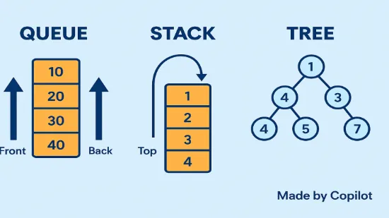
1. 자료구조란
1.1. 자료와 정보
- 자료: 현실세계에서 관찰이나 측정을 통해 수집된 값
- 정보: 어떤 상황에 대하여 적절한 의사결정을 할 수 있게 하는 지식으로서 자료의 유효한 해설이나 자료 상호간의 관계를 표현하는 내용
1.2. 추상화
- 추상화: 공통적인 개념을 이용하여 같은 종류의 다양한 객체를 정의하는 것
1.3. 자료구조
- 자료구조: 자료 사이의 논리적 관계를 컴퓨터나 프로그램에 적용하기 위해서는 추상화가 필요하고, 이러한 자료의 추상화를 위해 자료의 논리적 관계를 구조화한 것
- 자료구조와 알고리즘: 자료구조는 입력값에 대한 추상화의 결과이고, 알고리즘은 프로그램에 대한 추상화의 결과
- 기본 자료구조의 종류와 관계
자료구조 미리 정의된 자료구조 사용자 정의 자료구조 기본 자료구조 파생된 자료구조 - 정수
- 실수
- 문자
- 정수
- 실수
- 문자
- 리스트
- 스택
- 큐
- 트리
- 그래프
1.4. 자료구조와 알고리즘의 관계 및 알고리즘의 특성
- 알고리즘: 컴퓨터에게 일을 시키는 명령들의 모음으로, 자료구조는 알고리즘의 기초
- 알고리즘의 조건
- 출력: 알고리즘 수행 후 최소 한 가지 결과 생성해야 함.
- 유효성: 각 연산이 명확하고, 실행가능해야 함.
- 입력: 유한한 입력에 입력 형태가 정의될 수 있어야 함.
- 명확성: 각 명령은 모호함이 없이 명확해야 함.
- 유한성: 알고리즘은 종료가 명확하게 정의되어야 함.
1.5. 알고리즘의 성능
1.5.1. 알고리즘 실행시간의 예측
- 어떤 알고리즘이 실행횟수(실행시간)에 대하여 Order(n)함수를 가지고 있다는 것은 실행횟수가 그러한 경향(O(n))을 가지고 있다는 것을 의미
- 그런 알고리즘은 유사한 입력 개수의 증가에 대해서 비슷한 실행시간의 증가를 보인다는 것을 의미
- 같은 일을 하는 여러 알고리즘의 실행시간을 예측해서 특정 입력 경향에 대해 적합한 알고리즘을 선택 가능
- 결국 컴퓨터과학에서 알고리즘의 성능은 알고리즘의 실행시간 분석을 통한 실행시간 예측으로 비교
1.5.2. 실행시간의 측정
- 알고리즘 측정시 실행파일을 OS에서 제공하는 System Clock을 이용하여 시간을 축정
- 다만 높은 비용때문에 실행 시간 예측을 통해 알고리즘을 선택하고 평가
2. 배열
2.1. 정의
- 배열은 인덱스와 원소값(index, value)의 쌍으로 구성된 집합으로, 정의된 각 인덱스는 그 인덱스와 관련된 값 보유
- 단일자료형: 원소들이 모두 같은 자료형의 값과 같은 크기의 기억공간을 차지
- 물리적 순서 = 논리적 순서: 배열의 첫번째 원소가 위치하는 메모리 주소를 알면 인덱스를 이용하여 임의의 배열 원소의 주소값 계산 가능
- 인덱스를 이용해 원소값에 직접 접근 가능
- 메모리 영역의 추상화와 구체화
- 컴퓨터는 운영체제의 지휘 아래 메모리의 물리적인 주소값을 전달받아 자료를 가져오고, CPU에서는 가져온 자료를 계산
- 개발자는 프로그램에서 선언한 배열과 인덱스 값을 이용해 알고리즘을 작성하고 그 알고리즘에 따라 프로그램 완성
- 운영체제는 개발자의 추상화된 값과 컴퓨터의 물리적인 값 연결
- 프로그래밍 언어는 개발자와 운영체제 간의 의사소통을 위한 도구
2.2. 배열의 추상 자료형
ADT(Abstract Data Type) Array
- 배열 객체: <i∈Index, e∈Element> 쌍들의 집합이며, Index는 순서를 나타내는 정수값이고, Element는 같은 자료형의 원소값
- 연산: a=∈Array; i∈Eindex; x; item∈Element; n∈Integer인 모든 a, item, n에 대하여 다음과 같은 연산이 정의됨(a는 0개 이상의 원소를 갖는 배열, item은 배열에 저장되는 원소, n은 배열의 최대 크기를 정의하는 정수값)
Array create(n) ::= 배열의 크기가 n인 빈 배열을 생성하고 공백 배열을 반환한다;
Element retrieve(a, i) ::= if(i∈Index)
then { 배열의 i번째에 해당하는 원소값 'e'를 반환; }
esle { 에러 메시지를 반환한다; }
Array store(a, i, e) ::= if(i∈Index)
then { 배열 a의 i번째 위치에 원소값 'e'를 저장하고 배열 a를 반환; }
else { 인덱스 i가 배열 a의 크기를 벗어나면 에러 메시지를 반환; }
End Array
2.3. 배열의 연산의 구현
2.3.1. 배열의 생성
// C
void create(int n) { // n=5
int a[n]; // n개의 원소를 저장할 수 있는 배열의 메모리 공간을 정의
int i; // 반복문 돌리기 위한 i의 변수 선언
for(i=0; i<n, i++) { // 각 메모리 공간에 대한 값 초기화
a[i] = 0;
}
}
# Python
def create(n):
return [None] * n
// JS
function create(n) {
return new Array(n).fill(null);
}
2.3.2. 배열의 검색
#define array_size 5 // 인덱스의 범위를 #define함수로 정의. 인덱스 i값이 유효집합 포함되어 있는지 여부 확인
int retrieve(int *a, int i) { // i번째 인덱스의 원소값을 반환하는 함수명을 retrieve로 정의. 배열을 가리키는 변수 a와 반환할 원소값의 위치를 가리키는 i변수의 값을 매개변수로 전달받음.
if(i >= 0 && i < array_size) { // 위치를 가리키는 i값이 Index 유효 집합 범위에 해당하는지 비교
return a[i];
}
else { // 인덱스 i값이 Index 유효 집합 범위에 해당하지 않는 경우 Error 출력
print("Error\n");
return(-1);
}
}
2.3.3. 배열의 저장
#define array_size 5 // 인덱스 범위를 함수로 정의
void store(int *a, int i, int e) { // i번째 인덱스의 원소값을 반환하는 함수의 이름을 추상 자료형에서와 같이 store로 정의. 배열를 가리키는 변수 a, 저장할 원소값의 위치를 가리키는 i, 저장할 원소값 e를 매개변수로 전달받음.
if(i >= 0; i < array_size) { // 위치를 가리키는 i값이 Index 유효 집합 범위에 해당하는지 비교
a[i] = e; // a[i] 위치에 e 저장
}
else {
print("Error\n"); // 인덱스 i값이 Index 유효 집합 범위에 해당하지 않는 경우 Error 출력
}
}
2.3.4. 1차원 배열
배열의 메모리
| A[0] | A[1] | A[2] | A[3] | A[4] |
|---|---|---|---|---|
| A(L) | A(L+1) | A(L+2) | A(L+3) | A(U) |
- 배열의 원소들은 컴퓨터 메모리의 연속적 기억장소에 할당되며 순차적 저장
- 첫번째 원소 A[0]의 메모리 시작 주소를 A[L]이라고 하고 자료형의 크기(k)를 알면 A[i]의 주소 파악 가능
A[i]의 저장 주소 = a+i*k (a는 배열의 첫번째 원소가 저장된 주소, 배열은 동일 유형의 원소이므로 i*k가 성립)
2.3.5. 배열의 확장
- 2차원 배열: 원소값을 특정하기 위해 필요한 인덱스가 두 개인 배열
- 2차원 배열의 선언: A[m][n] m:행번호, n:열번호
- 2차원 배열의 행우선 메모리 연속할당: 하나의 행을 연속적으로 메모리에 할당하고, 그 다음 행을 메모리 영역에 할당하는 방법
- 코볼, 파스칼, C
A[0] A[1] A[2] A[3] B[0] B[1] B[2] - 2차원 배열의 열우선 메모리 연속 할당: 하나의 열을 연속적으로 메모리에 할당하고, 그 다음 열을 메모리 영역에 할당하는 방법
- 포트란, MATLAB
A[0] A[1] A[2] A[3] B[0] B[1] B[2]
2.3.6. 희소행렬의 개념
// 희소행렬
A= [0][1][2][3][4][5][6][7][8]
[0] 0 20 0 0 9 0 0 11 0
[1] 0 0 0 0 0 0 0 0 0
[2]78 0 0 0 0 0 0 0 0
[3] 0 0 0 0 67 0 0 0 0
[4] 0 31 0 0 0 0 0 0 0
[5] 0 0 0 91 0 0 44 0 0
[6] 0 0 0 0 0 0 0 0 0
[7] 0 0 0 0 19 0 0 27 0
- 희소행렬: 원소값이 0인 원소가 그렇지 않은 원소보다 상대적으로 많은 행렬
- 컴퓨터 메모리의 낭비를 막고 처리의 효율성을 높이기 위해 희소행렬의 0인 원소는 저장하지 않고 0이 아닌 값만을 따로 모아서 저장 필요
// 희소행렬의 효율적 행렬표현
행 열 값
0 8 9 10 <= meta data 행개수, 열개수, 0이 아닌 원소개수
1 0 1 20
2 0 4 9
3 0 7 11
4 2 0 78
5 3 4 67
6 4 1 31
7 5 3 91
8 5 6 44
9 7 4 19
10 7 7 27
3. 스택
3.1. 스택의 개념
- 스택: 객체와 그 객체가 저장되는 순서를 기억하는 방법에 관한 추상 자료형
3.2. 스택의 추상 자료형
// 추상자료형 스택
// - 스택개체: 0개 이상의 원소를 갖는 유한 순서 리스트
// - 연산: stack∈Stack, item∈element, maxStackSize∈positiveinteger인 모든 stack(0개 이상의 원소를 갖는 스택), item(스택에 삽입되는 원소), maxStackSize(스택의 최대 크기를 정의하는 정수)에 대하여 다음과 같은 연산이 정의됨.
Stack CreateStack(maxStackSize) ::= 스택의 크기가 maxStackSize인 빈 스택을 생성하고 반환;
Boolean StackIsFull(stack, maxStackSize) ::= if((stack의 element 개수) == maxStackSize)
then { 'TRUE'값을 반환; }
else { 'FALSE'값을 반환; }
Stack Push(stack, item) ::= if(StackIsFull(stack))
then { 'stackFull'을 출력; }
else { 스택의 가장 위에 item을 삽입하고 스택을 반환; }
Boolean StackIsEmpty(stack) ::= if(stack == CreateStack(maxStackSize))
then { 'TRUE'값을 반환; }
else { 'FALSE'값을 반환; }
Element Pop(stack) ::= if(StackIsEmpty(stack))
then { 'stackEmpty'를 출력한다; }
else { 스택의 가장 위에 있는 원소를 삭제하고 반환; }
// 스택의 push와 pop 연산
CreateStack(3);
Push(stack, 'S');
Push(stack, 'T');
Pop(stack);
Push(stack, 'R');
Push(stack, 'P');
Push(stack, 'Q');
Pop(stack);
// 결과 S => R => null
3.3. 스택의 응용
스택은 입력값의 입력 순서나 시간의 선후 순서를 기억하기 위해 사용되는 자료구조
- 시스템 스택: 변수에 대한 메모리 할당과 수집을 위해 OS가 관리하는 스택
- 서브루틴 호출관리: 서브루틴의 수행이 끝난 후에 되돌아갈 함수 주소를 저장
- 후위 수식 계산
- 인터럽트 처리
- 컴파일러, 순환호출관리
3.4. 스택의 연산
- 스택의 삭제 연산: 스택의 가장 위에 있는 원소를 삭제하는 연산
- 스택의 삽입 연산: 스택의 가장 위에 있는 원소 위에 원소 하나를 추가하는 연산
3.4.1. 스택의 삭제 연산
int pop() {
if (top == -1) { // top이 -1과 같으면 스택은 빈 상태
return StackEmpty();
}
else {
return stack[top--];
}
}
3.4.2. 스택의 삽입 연산
void push(int item) {
if(top >= STACK_SIZE-1) { // 전달된 스택의 top값이 STACK_SIZE-1과 같으면
return StackIsFull(); // 스택은 데이터로 꽉 찬 상태
}
else {
stack[++top] = item; // 스택에서 top이 가리키는 주소값을 하나 증가한 후, item값을 저장
}
}
3.5. 사칙연산의 전/후/중위 표현
- 중위 표기법: 연산자를 피연산자의 사이에 표기하는 방법이며 일반적으로 가장 많이 표기하는 방법
- 전위 표기법: 연산자를 피연산자의 앞에 표기하는 방법
- 후위 표기법: 연산자를 피연산자의 뒤에 표기하는 방법
- 논리=>비교=>산술
3.5.1. 전위 표기법
A-(B+K)/D = -A(/(+BK)D)
3.5.2. 후위 표기법
E+(A-B)*C/D = E(((AB-)C*)D/)+
3.5.3. 스택을 이용한 후위 표기식의 계산
- 중위 표기식의 후위 표기식 변환 (예: A-B/C-D*E )
- 연산자의 우선순위 고려 괄호로 묶기 (예: ((A-(B/C))-(D*E)) )
- 괄호안의 연산자를 계산 뭉치의 우측 끝으로 이동 (예: ((A(BC/)-)(DE*)-) )
- 괄호제거 (예: ABC/-DE*- )
- 스택을 이용한 후위 표기식으로 변환
읽은기호 스택상태 출력 설명 [A]-B/C-D*E A 피연산자 => 출력 A[-]B/C-D*E - A 스택이 비어있으므로 push A-[B]/C-D*E - AB 피연산자 => 출력 A-B[/]C-D*E - / AB / 는 - 보다 우선순위 높음 => push A-B/[C]-D*E - / ABC 피연산자 => 출력 A-B/C[-]D*E - ABC/- 새 - 를 push하기 전, top스택 / 는 더 높은 우선순위이므로 pop 후 출력, 그 다음 기존 - 도 pop 후 출력, 새 - push A-B/C-[D]*E - ABC/-D 피연산자 => 출력 A-B/C-D[*]E -* ABC/-D *는 -보다 우선순위 높아 push A-B/C-D*[E] -* ABC/-DE 피연산자 => 출력 A-B/C-D*E ABC/-DE*- 남은 연산자 * pop 후 출력, - 출력
3.5.4. 후위 표기식의 계산 알고리즘과 설명
// 후위 표기식 369*+(중위표기 3+(6*9)) 의 계산 알고리즘
element evalPostfix(char *exp) { // evalPostfix 스택을 사용하여 후위표기식을 계산하는 함수, char형 포인터 매개변수로 수식이 저장된 배열을 가리키는 exp를 전달받음.
int oper1, oper2; // 사칙연산을 위한 피연산자
int value; // char형으로 저장된 숫자를 int형으로 변환 저장
int i=0; // 반복문 변수
int length = strlen(exp); // char형 포인터 매개변수로 저장받은 후위 표기식의 저장된 배열의 길이를 계산하여 length에 저장. 369*+이므로 값은 5
char symbol; // 배열에서 값을 가져와서 저장할 변수
top = -1; // 스택의 위치를 가리키는 변수를 -1로 초기화
for(i=0; i<length; i++) {
symbol = exp[i];
if(strchr("+-*/", symbol) == null) {
value = symbol - '0'; // 문자를 숫자로 바꿔 value에 저장
push(value); // value 값을 스택에 저장
}
else {
oper2 = pop(); // 스택에 저장된 값을 꺼네 oper2에 저장
oper1 = pop(); // 스택에 저장된 값을 꺼네 oper1에 저장
switch(symbol) {
case '+' : push(oper1 + oper2); // 계산 결과값 57을 top[0]에 저장
break;
case '-' : push(oper1 - oper2);
break;
case '*' : push(oper1 * oper2); // 계산 결과값 54를 top[1]에 저장
break;
case '/' : push(oper1 / oper2);
break;
}
}
}
return pop(); // 스택 top[0]에 저장된 57을 pop하고 함수 종료
}
4. 큐
4.1. 큐의 개념
- 큐: 한쪽에는 삽입이 발생하고 다른쪽에는 삭제가 발생하도록 정의되었으며, 선입선출 또는 선착순서브 알고리즘과 함께 사용되는 자료구조
4.2. 큐의 추상 자료형
- front: 원소의 삭제 연산이 일어나는 곳
- rear: 원소의 삽입 연산이 일어나는 곳
// 추상자료형 큐
// - 스택개체: 0개 이상의 원소를 갖는 유한 순서 리스트
// - 연산: queue∈Queue, item∈element, maxQueueSize∈positive integer인 모든 queue(0개 이상의 원소를 갖는 큐), item(큐에 삽입되는 원소), maxQueueSize(큐의 최대 크기를 정의하는 정수)에 대하여 다음과 같은 연산이 정의됨.
Queue Create_q(maxQueueSize) ::= 큐의 크기가 maxQueueSize인 빈 큐를 생성하고 반환;
Boolean IsFull_q(queue, maxQueSize) ::= if((queue의 elements 개수) == maxQueueSize)
then { 'TRUE'값을 반환; }
else { 'FALSE'값을 반환; }
Queue add_q(queue, item) ::= if(IsFull_q(queue))
then { 'queueFull'을 출력; }
else { 큐의 rear에서 item을 삽입하고, 큐를 반환; }
Boolean IsEmpty_q(queue) ::= if(rear == front)
then { 'TRUE'값을 반환; }
else { 'FALSE'값을 반환; }
Element Delete_q(queue) ::= if(IsEmpty_q(queue))
then { 'queueEmpty'를 출력; }
else { 큐의 front에 있는 원소(element)를 삭제하고 반환; }
// 큐의 삽입과 삭제 연산
Create_q(4); // 원소를 4개까지 저장할 수 있는 큐 생성
Add_q(queue, 'A'); // 큐에 'A' 삽입
Add_q(queue, 'B'); // 큐에 'B' 삽입
Add_q(queue, 'C'); // 큐에 'C' 삽입
Delete_q(queue); // 'A' 제거 후 반환
Delete_q(queue); // 'B' 제거 후 반환
Delete_q(queue); // queueEmpty 'C' 반환
Add_q(queue, 'D');
// 결과 D
4.3. 큐의 응용
- FCFS 또는 FIFO 스케줄링 기법: 프로그램이 준비큐에 도착한 순서대로 CPU를 할당받도록 하는 기법
- Round Robin 스케줄링 기법: 프로그램이 도착한 순서대로 CPU가 할당되지만 CPU의 시간할당량 또는 시간 간격에 의해 제한을 받으며, 일정한 크기의 시간 할당량을 모든 작업에 주고 그 시간동안 작업이 완료되지 못하면 준비 큐의 맨 뒤에 다시 배치되는 기법
4.4. 배열을 이용한 큐의 구현
// 1차원 배열을 이용한 큐의 구현
#define QUEUE_SIZE 5 // 큐의 크기를 5로 정의
typedef int element; // 큐의 원소인 element를 int형으로 정의
element queue[QUEUE_SIZE]; // 자료형 element를 저장할 수 있는 큐를 큐 크기 만큼 할당받음.
int front = -1; // 초기값 설정
int rear = -1; // 초기값 설정
4.4.1. 큐의 삽입 연산
// 큐의 삽입 연산
void Add_q(element item) { // rear값은 현재 큐에 가장 최근에 삽입된 원소를 가리킴
if(rear == QUEUE_SIZE-1) {
print("Queue is full!!");
return;
}
queue[++rear] = item; rear값을 하나 증가시킨 위치에 item값 저장
return;
}
4.4.2. 큐의 삭제 연산
// 큐의 삭제 연산
element Delete_q() { // Delete_q를 호출하면 전역변수 front는 큐의 삭제가 발생하는 위치의 한 칸 앞을 가리킴.
if(front == rear) { // 큐가 비어있는지 검사
print("Queue is empty!!");
return; return; // 함수종료
}
return(queue[++front]); // 원소를 삭제하기 위해 front 값을 하나 증가시키고, 그 위치에 있는 값을 반환
}
4.5. 원형 큐
- 원형큐: 파이프의 입구와 출구 부분을 연결시킨 형태이며, 큐의 양 끝을 연결시켜서 원으로 만든 형태의 큐
// 원형큐의 삽입 연산
void Add_q(element item) { // rear값은 현재 큐에 가장 최근에 삽입된 원소를 가리킴
if((rear + 1) % QUEUE_SIZE == front) {
printf("Queue is full");
return; // 함수종료
}
rear = (rear + 1) % QUEUE_SIZE;
queue[rear] = item;
}
// 원형큐의 삭제 연산
element Delete_q() { // 현재 front는 마지막으로 삭제된 원소의 위치를 가리키지만, Delete_q를 호출하면 front를 한칸 이동해서 실제 삭제할 원소를 가리키고 그 값을 반환
if(front == rear) { // 큐가 비어있는지 검사
printf("Queue is empty!!");
return; // 함수종료
}
front = (front + 1) % QUEUE_SIZE; // front 인덱스를 한칸 이동
return queue[front]; // 이동한 인덱스의 값을 반환
}
5. 연결리스트
5.1. 리스트의 개념
- 리스트: 원소들 간의 순서가 지켜지며 유지되는 구조
- 리스트의 원소들 간의 순서: 데이터가 저장되는 위치와 관계없이 사람들의 머릿속에 인식되는 ‘논리적인 순서’, 혹은 리스트에 나타나는 원소들 간의 ‘의미론적 순서’라는 점에서 배열의 ‘물리적인 순서’와 개념적으로 상이
5.2. 배열을 이용한 리스트의 구현
- 리스트의 원소값을 순서대로 배열에 저장함으로써 구현
- 리스트로 배열구현시 상대적으로 간단하며 높은 공간활용률이 장점
- 원소의 삽입/삭제시 많은 실행 시간 소요
5.3. 포인터를 이용한 리스트의 구현
- 원소의 자리에는 원소값을 저장하고, 다음원소를 가리키는 정보의 자리에는 다음 원소가 저장될 위치의 주소값을 저장하여 구현
5.4. 포인터 변수
- 포인터는 메모리에 저장되는 값(데이터)의 저장 위치에 대한 주소를 가리키는 데이터형
- 리스트의 노드는 원소값과 다음 원소를 가리키는 위치의 주소값으로 구성된 자료단위로, 데이터 요소(원소)와 리스트의 다음 원소를 지시하는 포인터(주소)를 가지는 자료단위
- 단항 연산자: 피연산자를 하나만 갖는 연산자
- 구조체: 다양한 데이터형의 변수를 하나의 상자 안에 넣어서 선언하거나 사용하는 C프로그래밍 문법
####### 포인터
#include <stdio.h>
int main(void) {
int a = 100; // 일반 변수
int *b = &a; // 포인터 변수 b를 선언하고 변수a의 주소 저장
printf("%d\n", a); // 100 출력
printf("%d\n", *b); // 역시 100 출력
return 0;
}
####### 포인터와 역참조
#include <stdio.h>
int main(void) {
int a; // 변수선언
int *p_a; // 포인터 변수 선언
p_a = &a; // p_a에 변수 a 주소를 저장
a = 231;
*p_a = 521; // p_a가 가리키고 있는 주소를 찾아가 521을 저장
printf("%d", a);
return 0;
}
5.4.1. 구조체 포인터 타입
####### 구조체 포인터
#include <stdio.h>
int main(void) {
struct linked_list_node { // 구조체 정의: 연결리스트의 노드를 표현
int data; // 정수값을 저장하는 변수
struct linked_list_node *link; // 다음 노드의 주소를 저장하는 포인터 변수
};
// 노드 2개 생성
struct linked_list_node node1, node2;
node1.data = 10; // 첫번째 노드 데이터
node1.link = &node2; // node1이 node2를 가리키도록 연결
node2.data = 20; // 두번째 노드 데이터
node2.link = NULL; // 마지막 노드이므로 NULL
printf("%d -> %d\n", node1.data, node1.link -> data ); // 10 -> 20 출력
return 0;
}
5.4.2. 프로그램 실행 중의 구조체 메모리 할당
- 배열을 이용한 리스트 구현의 한계: 배열은 프로그램 실행전 크기를 결정하여 선언하므로, 실재 리스트 수 보다 적으면 메모리를 낭비하고, 실행중 리스트 수가 배열보다 크면 오류 발생
- 해결방안으로 프로그램 실행중 동적으로 메모리를 할당받아 리스트 원소를 할당받은 메모리 공간에 저장하여 새롭게 할당받은 메모리 공간을 연결
#include <stdio.h>
#include <stdlib.h>
int main(void) {
int *p_a; // 정수를 가리키는 포인터 p_a선언
float *p_b; // 실수를 가리키는 포인터 p_b선언
// malloc() = Dynamic Memory Allocate
p_a = (int *)malloc(sizeof(int)); // 정수 하나를 저장할 수 있는 공간 할당하고 그것을 가리키는 시작주소를 p_a에 저장
p_b = (float *)malloc(sizeof(float)); // 실수 하나를 저장할 수 있는 공간 할당하고 그것을 가리키는 시작주소를 p_b에 저장
*p_a = 10; // p_a에 저장된 주소에 찾아가 10을 저장
*p_b = 3.14; // p_b에 저장된 주소에 찾아가 3.14를 저장
printf("*p_a is %d, *p_b is %f", *p_a, *p_b); // a is 10, b is 3.140000
free(p_a); // malloc 함수를 이용해 할당받은 메모리 해제
free(p_b); // malloc 함수를 이용해 할당받은 메모리 해제
}
5.5. 연결리스트에서 노드의 삭제와 삽입
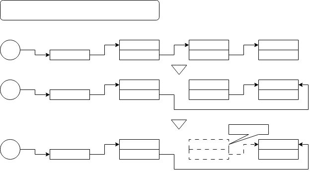
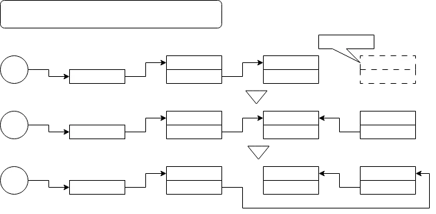
- 리스트 원소 삭제: 원하는 리스트의 원소를 리스트로부터 제거
- 리스트 원소 삭제 연산 흐름
- 삭제할 노드의 선행 노드의 링크 필드를 삭제할 노드의 후행 노드를 가리키게 함.
- 삭제할 노드를 메모리에서 반환
- 리스트 원소 추가: 원하는 리스트의 원소를 리스트의 적절한 위치에 추가
- 연결 리스트에서 추가 연산 흐름
- 메모리 공간을 할당받고 삽입할 내용을 저장해 삽입할 Y노드를 생성
- Y노드의 링크 부분이 X노드의 후행 노드를 가리키게 함.
- Y노드의 선행 노드가 될 X노드의 링크 필드가 Y노드를 가리키게 함.
- 연결 리스트에서 삭제 연산 흐름
- 삭제될 Y노드의 선행 노드를 찾고 이를 X노드라고 정의
- X노드의 링크 부분이 Y노드의 후행 노드를 가리키게 함.
5.6. 연결리스트의 여러가지 연산 프로그램
#include <stdio.h>
#include <stdlib.h>
/* 연결리스트의 생성 */
typedef struct ListNode { // 구조체 정의
int data; // 정수형 데이터 멤버
struct ListNode *link; // 동일 구조체 타입을 가리키는 포인터 멤버 link 선언
} listNode; // 별칭
typedef struct { // 태그 없는 구조체 정의
listNode *head; // listNode를 가리키는 포인터 멤버 head 선언
} linkedList_h; // 별칭
linkedList_h *createLinkedList_h(void) { // linkedList_h 구조체를 동적 할당하여 생성하고, 그 주소(포인터)를 반환하는 함수정의
linkedList_h *H; // linkedList_h 구조체를 가리키는 포인터변수 H 선언
H = (linkedList_h*)malloc(sizeof(linkedList_h)); // malloc으로 linkedList_h 구조체 크기만큼 메모리를 할당하고, 그 주소를 H에 저장
H->head = NULL; // 아직 노드가 없으므로 head는 NULL로 초기화
return H; // H에 저장된 주소(포인터)를 반환
}
/* 연결리스트 노드 삽입 */
void addNode(linkedList_h *H, int x) { // 노드를 추가하는 함수선언
listNode *NewNode; // 새로운 포인터변수 MewNode 선언
listNode *LastNode; // 마지막 포인터변수 LastNode 선언
NewNode = (listNode*)malloc(sizeof(listNode)); // malloc으로 listNode 구조체 크기만큼 메모리를 할당하고, 그 주소를 NewNode에 저장
NewNode->data = x; // 데이터값에 x를 저장
NewNode->link = NULL; // 새노드로 아직 노드가 없으므로 head는 NULL로 초기화
if (H->head == NULL) { // 현재 리스트가 비어있는지 확인
H->head = NewNode; // 비어 있으면 새 노드를 첫번째 노드로 지정
return; // 함수종료
}
LastNode = H->head;
// while문을 처음부터 돌릴 수 있도록 LastNode를 리스트의 첫번째 노드로 초기화
while (LastNode->link != NULL) { // 현재 노드의 link가 NULL이 될때까지 반복
LastNode = LastNode->link; // link를 따라가면서 다음 노드로 이동
}
LastNode->link = NewNode; // 마지막 노드의 link가 NULL인 위치에 새 노드를 연결
}
/* 연결리스트의 특정 노드 뒤에 새 노드 삽입 */
void additNode(linkedList_h *H, listNode *preNode, int itdata) {
// 리스트 중간에 노드를 삽입하는 연산
listNode *NewNode; // 새노드를 가리킬 포인터변수 선언
NewNode = (listNode*)malloc(sizeof(listNode)); // malloc으로 listNode 구조체 크기만큼 메모리를 할당하고, 그 주소를 NewNode에 저장
NewNode->data = itdata; // NewNode의 데이터 필드에 itdata 값 저장
NewNode->link = NULL; // NewNode의 링크 필드 초기화
NewNode->link = preNode->link; // NewNode의 링크 필드를 preNode의 링크가 가리키던 다음 노드로 연결
preNode->link = NewNode; // preNode의 링크 필드를 새 노드를 가리키도록 변경
}
/* 연결리스트의 마지막 노드 삭제 */
void deleteNode(linkedList_h *H) {
listNode *prevNode;
listNode *delNode;
if (H->head == NULL) { // 현재 리스트가 비어있는지 확인
return; // 공백리스트이므로 함수종료
} else if (H->head->link == NULL) { // 리스트에 링크가 한 개인 경우
free(H->head); // 첫번째 노드의 메모리 해제
H->head = NULL;
return;
} else { // 리스트에 노드가 여러 개인 경우
prevNode = H->head; // 리스트의 첫번째 노드를 가리킴
delNode = H->head->link; // 리스트의 두번째 노드를 가리킴
// while문을 처음부터 돌릴 수 있도록 prevNode를 리스트의 첫번째 노드로 초기화
while (delNode->link != NULL) { // delNode의 link가 NULL이 될때까지 반복
prevNode = delNode; // preNode를 delNode로 갱신
delNode = delNode->link; // link를 따라가면서 다음 노드로 이동
}
free(delNode); // delNode 반환
prevNode->link = NULL; // preNode의 링크를 NULL로 변경
}
}
#include <stdio.h>
#include <stdlib.h>
/* 연결리스트의 생성 */
typedef struct ListNode { // 구조체 정의
int data; // 정수형 데이터 멤버
struct ListNode *link; // 동일 구조체 타입을 가리키는 포인터 멤버 link 선언
} listNode; // 별칭
typedef struct { // 태그 없는 구조체 정의
listNode *head; // listNode를 가리키는 포인터 멤버 head 선언
} linkedList_h; // 별칭
linkedList_h *createLinkedList_h(void) { // linkedList_h 구조체를 동적 할당하여 생성하고, 그 주소(포인터)를 반환하는 함수정의
linkedList_h *H; // linkedList_h 구조체를 가리키는 포인터변수 H 선언
H = (linkedList_h*)malloc(sizeof(linkedList_h)); // malloc으로 linkedList_h 구조체 크기만큼 메모리를 할당하고, 그 주소를 H에 저장
H->head = NULL; // 아직 노드가 없으므로 head는 NULL로 초기화
return H; // H에 저장된 주소(포인터)를 반환
}
/* 연결리스트의 특정노드 검색 함수의 보조함수(삭제) */
void afterDeleteNode(linkedList_h *H, listNode *prevNode, listNode *delNode) {
if (prevNode == NULL) { // 삭제할 노드가 첫번째 노드인 경우
H->head = delNode->link; // head를 다음노드로 갱신
} else { // 삭제할 노드가 첫번째 노드가 아닌 경우
prevNode->link = delNode->link; // 이젠노드가 삭제할 노드의 다음 노드를 가리키도록 갱신
}
free(delNode); // 메모리 삭제
}
/* 연결리스트의 특정노드 검색 */
void findNode(linkedList_h *H, int itdata) {
listNode *prevNode = NULL; // 이전노드를 추적할 포인터 선언
listNode *delNode = H->head; // 현재 검사할 노드를 가리키는 포인터 선언
if (H->head == NULL) { // 현재리스트가 비어있는 경우
return; // 삭제할 노드가 없으므로 함수 종료
}
while (delNode != NULL) {
if (delNode->data == itdata) {
afterDeleteNode(H, prevNode, delNode); // 삭제함수 실행
return; // 삭제함수 실행 후 종료
}
prevNode = delNode; // 이전노드 갱신
delNode = delNode->link; // 다음노드로 이동
}
}
6. 연결 리스트의 응용
6.1. 연결 리스트의 변형
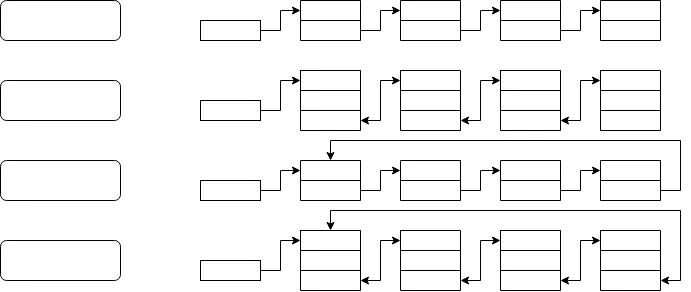
6.2. 원형 연결리스트
6.2.1. 원형 연결리스트의 생성
/* 원형 연결리스트*/
#include <stdio.h>
#include <stdlib.h>
/* 노드 구조체 정의 */
typedef struct ListNode {
int data;
struct ListNode *link;
} listNode;
/* 리스트 해더 구조체 정의 */
typedef struct {
listNode *head;
} linkedList_h;
/* 원형 연결리스트 생성 함수 */
linkedList_h *createLinkedList_h(void) {
linkedList_h *H; // 포인터변수 선언
H = (lindedList_h*)malloc(sizeof(lindedList_h)); // 메모리 할당
H->head = NULL; // 할당받은 메모리 초기화
return H;
}
/* 원형연결리스트에 첫번째 노드 삽입 */
void addFirstNode(linkedList_h *H, int x) {
listNode *tempNode; // 순회용 포인터
listNode *NewNode; // 새로 삽입할 노드
NewNode = (listNode*)malloc(sizeof(listNode)); // 새 노드 메모리 할당
NewNode->data = x; // 데이터에 x삽입
NewNode->link = NULL; // 포인터 초기화
if (H->head == NULL) {
H->head = NewNode; // head가 NewNode를 가리키도록 함.
NewNode->link = NewNode; // 원형 연결리스트
return;
} else { // 노드가 없다가 첫번째로 생성되었으므로 여기까지 실행 }
}
6.2.2. 원형 연결리스트에 첫번째 노드 삽입
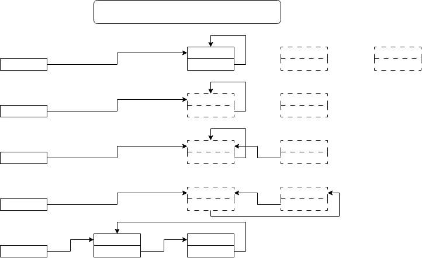
/* 원형 연결리스트*/
#include <stdio.h>
#include <stdlib.h>
/* 노드 구조체 정의 */
typedef struct ListNode {
int data;
struct ListNode *link;
} listNode;
/* 리스트 해더 구조체 정의 */
typedef struct {
listNode *head;
} linkedList_h;
/* 원형 연결리스트 생성 함수 */
linkedList_h *createLinkedList_h(void) {
linkedList_h *H; // 포인터변수 선언
H = (lindedList_h*)malloc(sizeof(lindedList_h)); // 메모리 할당
H->head = NULL; // 할당받은 메모리 초기화
return H;
}
/* 원형연결리스트에 첫번째 노드 삽입 */
void addFirstNode(linkedList_h *H, int x) {
listNode *tempNode; // 순회용 포인터
listNode *NewNode; // 새로 삽입할 노드
NewNode = (listNode*)malloc(sizeof(listNode)); // 새 노드 메모리 할당
NewNode->data = x; // 데이터에 x삽입
NewNode->link = NULL; // 포인터 초기화
if (H->head == NULL) { // 1노드가 존재하므로 else로 이동
H->head = NewNode; // head가 NewNode를 가리키도록 함.
NewNode->link = NewNode; // 원형 연결리스트
return;
} else {
tempNode = H->head; // tempNode를 head부터 시작
while (tempNode->link != H->head) {
// tempNode->link가 자기자신을 참조하므로 head와 값이 같아 while문 패스
tempNode = tempNode->link; // tempNode 한칸씩 이동하여 결국 마지막 노드에 도착
}
NewNode->link = tempNode->link;
// 새 노드의 link가 tempNode가 참조하는 자기자신을 가리키도록 함.
tempNode->link = NewNode;
H->head = NewNode; // head가 NewNode를 가리키도록 변경
}
}
6.2.3. 원형 연결리스트의 중간에 노드 삽입
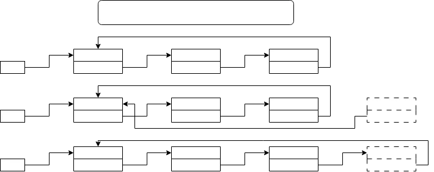
/* 원형 연결리스트*/
#include <stdio.h>
#include <stdlib.h>
/* 노드 구조체 정의 */
typedef struct ListNode {
int data;
struct ListNode *link;
} listNode;
/* 리스트 해더 구조체 정의 */
typedef struct {
listNode *head;
} linkedList_h;
/* 원형 연결리스트 생성 함수 */
linkedList_h *createLinkedList_h(void) {
linkedList_h *H; // 포인터변수 선언
H = (linkedList_h*)malloc(sizeof(linkedList_h)); // 메모리 할당
H->head = NULL; // 할당받은 메모리 초기화
return H;
}
/* 원형연결리스트에 가운데 findData 값을 가진 노드 다음에 삽입 */
void addMiddleNode(linkedList_h *H, int itData, int findData) {
if (H->head == NULL) {
return;
}
listNode *NewNode;
NewNode = (listNode*)malloc(sizeof(listNode));
NewNode->data = itData;
NewNode->link = NULL;
listNode *prevNode = H->head; // prevNode를 head부터 시작
while (prevNode->data != findData) {
prevNode = prevNode->link;
if (prevNode == H->head) {
free(NewNode);
return;
}
}
NewNode->link = prevNode->link;
prevNode->link = NewNode;
}
6.2.4. 원형 연결리스트의 노드 삭제
/* 원형 연결리스트*/
#include <stdio.h>
#include <stdlib.h>
/* 노드 구조체 정의 */
typedef struct ListNode {
int data;
struct ListNode *link;
} listNode;
/* 리스트 해더 구조체 정의 */
typedef struct {
listNode *head;
} linkedList_h;
/* 원형 연결리스트 생성 함수 */
linkedList_h *createLinkedList_h(void) {
linkedList_h *H; // 포인터변수 선언
H = (linkedList_h*)malloc(sizeof(linkedList_h)); // 메모리 할당
H->head = NULL; // 할당받은 메모리 초기화
return H;
}
/* 검색함수에서 호출할 삭제함수 */
void delCircularNode(linkedList_h *H, listNode *prevNode) {
listNode *lastNode;
listNode *delNode;
lastNode = H->head;
while (lastNode->link != H->head) {
lastNode = lastNode->link;
}
delNode = prevNode->link;
prevNode->link = delNode->link;
if (delNode == H->head) {
lastNode->link = H->head;
H->head = delNode->link;
free(delNode);
}
}
/* 원형연결리스트에서 값을 가진 노드 검색 */
void findDelCircularNode(linkedList_h *H, int x) {
listNode *tempNode; // 현재 검사중인 노드
listNode *prevNode; // 삭제하고자 하는 노드의 선행노드
if (H->head == NULL) { // 노드가 없으므로
printf("이 원형연결리스트는 비어있음.");
return;
}
tempNode = H->head; // 첫번째 노드부터 검색
prevNode = H->head;
if (tempNode->data == x) { // 첫번째 노드가 삭제 대상일 때
if (tempNode->link == tempNode) { // 노드가 하나만 있는 경우
H->head = NULL;
free(tempNode);
return;
}
while (prevNode->link != H->head) { // 노드가 여러개인 경우
prevNode = prevNode->link;
}
prevNode->link = tempNode->link; // 마지막 노드가 두번째 노드를 가리키도록
H->head = tempNode->link;
free(tempNode);
return;
} else { // 첫번째 노드 제외하고 전체 순회
do {
prevNode = tempNode;
tempNode = tempNode->link;
if (tempNode->data == x) {
return delCircularNode(H, prevNode);
}
} while (tempNode != H->head);
printf("x와 같은 값이 없음.");
}
}
6.3. 이중 연결 리스트
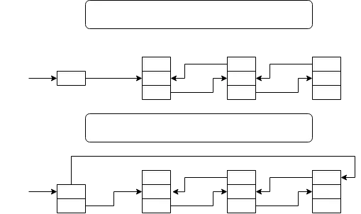
6.3.1. 이중 연결 리스트의 노드 구조
/* 이중 연결리스트의 정의와 생성 */
#include <stdio.h>
#include <stdlib.h>
/* 이중 연결 리스트의 정의 및 헤드 노드 생성 */
typedef struct ListNode { // 노드 구조 정의
struct ListNode *Llink;
int data;
struct ListNode *Rlink;
} listNode;
typedef struct { // 이중 연결 리스트의 헤드 노드 구조 정의
listNode *Lhead;
listNode *Fhead;
} linkedList_h;
linkedList_h *createLinkedList_h(void) { // H 노드 생성
linkedList_h *H;
H = (linkedList_h*)malloc(sizeof(linkedList_h));
H->Lhead = NULL;
H->Fhead = NULL;
return H;
}
6.3.2. 이중 연결 리스트의 노드 삽입
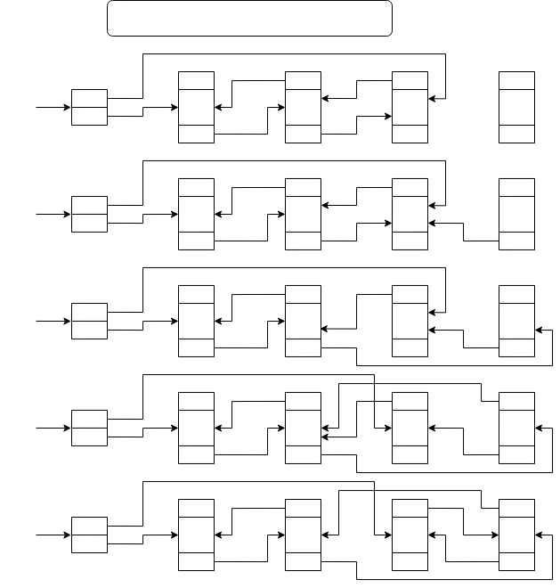
/*** 이중 연결리스트의 정의와 생성 부분은 생략. 6.3.1 단원 소스 참조 ***/
/* 이중 연결리스트의 노드 삽입 */
void addDoubleNode(linkedList_h *H, listNode *prevNode, int x) {
listNode *NewNode;
NewNode = (listNode*)malloc(sizeof(listNode));
NewNode->Llink = NULL;
NewNode->data = x;
NewNode->Rlink = NULL;
NewNode->Rlink = prevNode->Rlink;
prevNode->Rlink = NewNode;
NewNode->Llink = prevNode;
NewNode->Rlink->Llink = NewNode;
}
6.3.3. 이중 연결 리스트의 노드 삭제
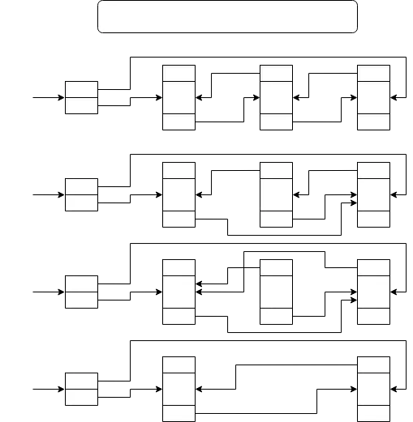
/*** 이중 연결리스트의 정의와 생성 부분은 생략. 6.3.1 단원 소스 참조 ***/
/* 이중 연결리스트의 노드 삽입 */
void delDoubleNode(linkedList_h *H, ListNode *delNode) {
delNode->Llink->Rlink = delNode->Rlink;
delNode->Rlink->Llink = delNode->Llink;
free(delNode);
}
7. 트리
7.1. 개요
- Tree
- Binary Tree
- Heap
- Binary Search Tree
- AVL Tree
- BB Tree
- Splay Tree
- m-way(m-ary) Tree
- Trie
- m-ary Search Tree
- B-tree
- B*-Tree
- B+-Tree
- 2-3 Tree
- 2-3-4 Tree
- Red-Black Tree
- 2-3-4 Tree
- B-tree
- Binary Tree
7.2. 용어와 논리적 표현방법
- 트리: 논리적 계층이 있는 구조
- 노드: 트리를 구성하는 항목
- 루트: 트리에서 부모를 갖지 않는 최상위 노드
- 진입 차수: 트리에 있는 어느 노드에 대해 그 노드로 들어오는 선의 개수
- 진출 차수: 트리에 있는 어느 노드에 대해 그 노드에서 나가는 선의 개수
- 내부 노드: 루트도 잎도 아닌 노드
- 부모(Parent), 자식(Child): 노드 간의 계층 관계
- 형제(sibling): 같은 부모를 갖는 노드들
7.3. 추상 자료형
-
생성 및 초기화
- createTree(), initTree(): 빈 트리를 생성하고 루트를 NULL로 초기화
-
검사
- isEmpty(): 트리가 비어 있는지 확인
- size(): 노드의 개수를 반환
- height(): 트리의 높이를 반환
-
접근
- root(): 루트 노드를 반환
- parent(node): 특정 노드의 부모를 반환
- children(node): 특정 노드의 자식을 반환
- leftChild(node), rightChild(node): 이진 트리에서 왼쪽/오른쪽 자식 반환
-
갱신
- insert(node, data): 특정 노드에 자식 노드를 삽입
- delete(node): 특정 노드를 삭제(서브트리까지 제거 가능)
-
탐색(Traversal)
- preorder(node): 전위순회(Root -> Left -> Right)
- inorder(node): 중위순회(Left -> Root -> Right)
- postorder(node): 후위순회(Left -> Right -> Root)
- levelOrder(): 레벨 순회(BFS 방식)
7.4. 이진 트리
7.4.1. 개요
- 전(Full) 이진 트리: 모든 노드가 0 또는 2개의 자식을 갖는 트리
- Complete(완전) 이진 트리: 높이가 k인 이진 트리가 레벨 0부터 k-2까지 다 채우고 마지막 k-1
- 포화(Perfect) 이진 트리: 이진 트리에서 각 레벨이 허용하는 최대 개수의 노드를 가지는 트리 레벨에서 왼쪽부터 오른쪽으로 노드들이 차례로 채워진 트리
7.4.2. 이진 트리 구현
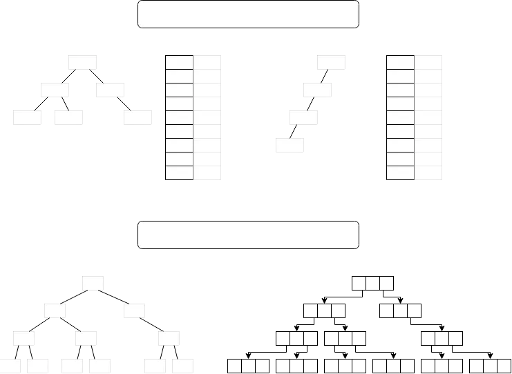
7.5. 이진 트리 연산
7.5.1. 이진 트리 순회
- 순회(traverse): 트리의 각 노드를 빠짐없이 한번씩 방문하는 것
- 서브트리: 특정 노드를 루트로 하는 작은 트리
- 전위순회: P->L->R 트리구조를 복사하거나 직렬화할 때 사용되며, 파일시스템 같은 계층구조를 출력할 때 응용
- 중위순회: L->P->R 이진탐색 트리에서 데이터를 정렬된 순서로 읽을 때 사용되며, DB인텍스 트리에서 범위 검색 수행할 때 응용
- 후위순회: L->R->P 노드 삭제나 메모리 해체작업 시 사용되며, 컴파일러에서 구문트리를 후위방식으로 읽어 코드 생성할 때 응용
#include <stdio.h>
#include <stdlib.h>
/* 노드의 생성 코드 */
typedef struct node {
struct node *left; // 좌측 자식노드 포인터
char data; // 노드에 저장되는 문자
struct node *right; // 우측 자식노드 포인터
} node;
/* 이진트리 순회 코드 */
void preorder(node *root) { // 전위순회
if (root !=NULL) {
printf("%c", root->data);
preorder(root->left);
preorder(root->right);
}
}
void inorder(node *root) { // 중위순회
if (root != NULL) {
inorder(root->left);
printf("%c", root->data);
inorder(root->right);
}
}
void postorder(node *root) { //후위순회
if (root != NULL) {
postorder(root->left);
postorder(root->right);
printf("%c", root->data);
}
}
7.5.2. 이진 트리 생성, 삽입, 삭제
#include <stdio.h>
#include <stdlib.h>
/* 노드의 생성 코드*/
typedef struct node { // 노드 생성
struct node *left;
char data;
struct node *right;
} node;
/* 이진 트리의 노드 삽입 */
node *insert(node *here, node *it) { // here 현위치, it 삽입할 노드
if (here == NULL) { // 현재 위치가 비어있다면,
here = it; // 그 자리에 it을 대입하고,
return it; // 부모노드가 새 노드를 알 수 있도록 반환
} else { // 현재 위치가 비어있지 않다면,
node *victim; // 임시 노드 생성
victim = here; // 기존 노드를 임시로 저장
*here = *it; // 현재 노드의 내용을 새 노드의 내용으로 오버라이팅
return victim; // 임시로 저장했던 기존 노드 반환
}
}
/* 이진 트리의 노드 삭제 */
node *delete(node *root, node *it, char direction) {
node *parent = searchParent(root, it); // 삭제할 노드(it)의 부모 검색
if (parent == NULL) { // 부모가 없으면,
printf("삭제 불가능\n"); // 삭제불가
return NULL;
} else { // 부모가 있는데,
if (direction == 'l') { // 왼쪽 자식일 경우
free(parent->left); // 메모리 해제
parent->left = NULL; // 좌측 포인터 초기화
return it;
} else if (direction == 'r') { // 오른쪽 자식일 경우
free(parent->right); // 메모리 해제
parent->right = NULL; // 우측 포인터 초기화
return it;
} else { // 방향이 잘못된 경우
return NULL;
}
}
}
7.5.3. 이진 트리 노드 개수 세기
#include <stdio.h>
#include <stdlib.h>
/* 노드의 생성 코드*/
typedef struct node { // 노드 생성
struct node *left;
char data;
struct node *right;
} node;
/* 이진 트리의 노드 수 세는 연산 */
int get_node_num(node *root) {
int num = 0;
if (root == NULL) { // 트리가 비어 있으면,
return 0; // 노드 수는 0
} else { // 트리가 비어있지 않으면,
num = 1; // 현재 노드 자신을 카운트
num += (get_node_num(root->left)+get_node_num(root->right));
// 좌측 서브트리와 우측 서브트리 노드 수를 재귀적으로 합산
return num;
}
}
/* 이진 트리의 잎 노드 개수 세는 연산 */
int get_leaf_num(node *root) {
int sum = 0;
if (root == NULL) {
return 0;
} else if (root->left == NULL && root->right == NULL) {
return 1;
} else {
sum += get_leaf_num(root->left) + get_leaf_num(root->right);
return sum;
}
}
7.6. 일반 트리를 이진 트리로 변환
- 변환 순서
- 각 노드의 형제 연결
- 가장 좌측 노드의 부모와 연결된 링크만 남기고 모두 제거
- 루트 노드는 반드시 좌측 자식 노드만 가지도록 함.
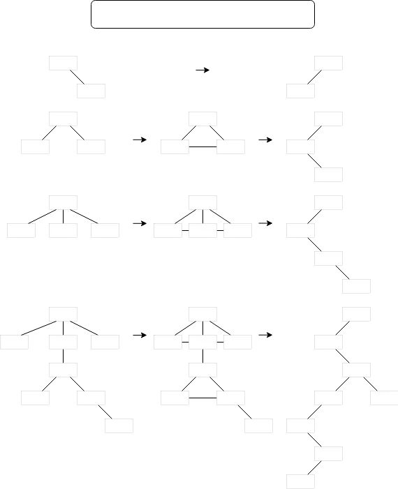
8. 스레드 트리
8.1. 개요
- 스레드: 정해진 순회 방법에 따른 방문 순서를 유지하는 포인터
- 스레드 트리: 스레드라는 포인터를 갖는 이진 트리
- 우측 스레드: 정해진 순회 순서에 따른 그 노드의 후속 노드를 가리킴.
- 좌측 스레드: 그 노드의 선행 노드를 가리킴.
- 이진 트리의 NULL 포인터 개수: 2n - (n - 1) = n + 1
8.2. 스레드 트리 구현
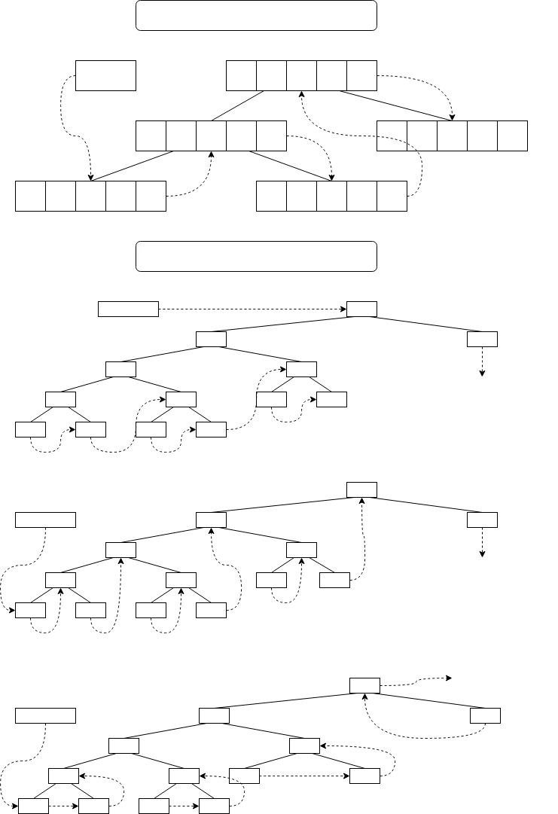
#include <stdio.h>
#include <stdlib.h>
/* 포인터 필드 추가 스레드 트리 구현 */
typedef struct tf_node {
struct tf_node *left; // 좌측 자식 포인터
struct tf_node *lthread; // 좌측 스레드 포인터
char data;
struct tf_node *right; // 우측 자식 포인터
struct tf_node *rthread; // 우측 스레드 포인터
} tfnode;
void inorder(tfnode *start_node) { // 시작 노드를 가리키는 포인터를 매개변수로 전달
tfnode *ptr;
ptr = start_node; // start_node 부터 시작
while(ptr != NULL) {
printf("%d", ptr->data);
ptr = ptr->rthread; // ptr을 ptr의 오른쪽 스레드 값으로 바꾸어 중위 순회에 따른 다음 노드를 가리키도록 함.
}
}
/* 빈 포인터 활용 스레드 트리 구현 */
class tf_node {
tf_node *left;
char data;
tf_node *right;
int thread_flag; // 스레드와 서브트리포인터 구분을 위한 스레드 플래그
}
8.3. 스레드 트리 순회, 삽입, 삭제
8.3.1. 스레드 트리 순회
#include <stdio.h>
#include <stdlib.h>
/* 중회 순위 스레드 트리의 중위 순회 코드 */
typedef struct tf_node {
struct tf_node *left;
char data;
struct tf_node *right;
int thread_flag;
} tfnode;
tfnode *inorder_start(tfnode *ptr) {
if (ptr == NULL) {
return NULL;
}
while (ptr->left != NULL) { // 가장 왼쪽 노드 찾기
ptr = ptr->left;
}
return ptr;
}
void inorder(tfnode *root) {
tfnode *ptr = inorder_start(root); // 중위 순회의 시작 노드 찾기
while(ptr != NULL) {
printf("%c", ptr->data);
if(ptr->thread_flag) { // ptr->right가 스레드 포인터로 사용되고 있으므로,
ptr = ptr->right; // ptr->right따라 점프하여 다음 노드 가리킴.
} else { // ptr->right가 진짜 오른쪽 자식 노드를 가리키므로,
ptr = inorder_start(ptr->right); // 오른쪽 서브트리의 가장 왼쪽 노드로 내려감.
}
}
}
8.3.2. 스레드 트리 노드 삽입 및 삭제
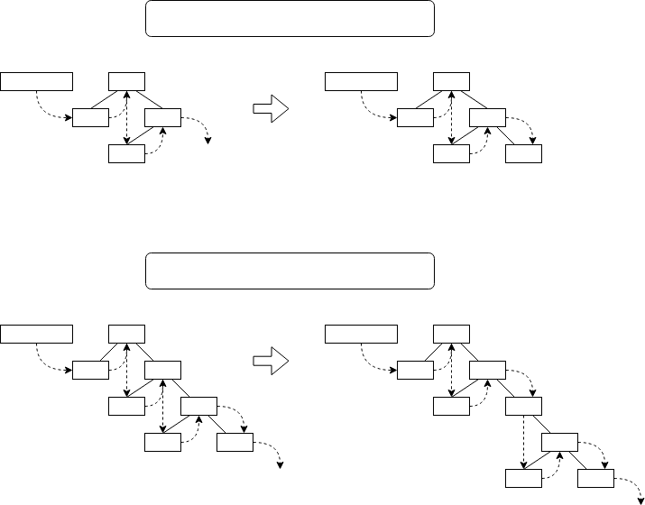
#include <stdio.h>
#include <stdlib.h>
/* 스레드 트리에 노드 삽입 연산 */
typedef struct tf_node {
struct tf_node *lthread;
struct tf_node *left;
char data;
struct tf_node *rthread;
struct tf_node *right;
} tfnode;
void inorder(tfnode *x, tfnode *y) {
y->left = NULL; // y노드의 좌측 자식은 없음
y->right = x->right; // y노드의 우측자식은 x노드의 우측자식
y->lthread = x; // 중위 순회에서 y의 이전 노드가 x이므로, 그걸 lthread로 연결
y->rthread = x->rthread; // y노드의 rthread는 x노드의 그것을 그대로 이어받음.
x->right = y; // x의 우측자식으로 y를 연결
x->rthread = y; // x의 우측스레드로 y를 가리키도록 수정
}
9. 힙(Heap)
9.1. 우선순위 큐
- 힙(Heap)의 사전적 의미: 영문 단어는 피라미드 모양으로 쌓아올린 더미
- 우선순위 큐: 대기 리스트에서 항상 우선순위가 높은 것을 먼저 처리하고, 그렇게 처리되는 것이 가장 꼭데기에 있는 자료구조로, 힙은 우선순위 큐를 트리로 구현한 것
- 힙(Heap): 부모 노드와 자식 노드 사이에 일정한 대소관계를 정의하여 구성한 완전이진트리로 우선순위 큐와 동일
- 최대힙: 루트가 가장 큰 값을 갖고, 부모는 자식보다 큰 값을 갖는 완전 이진 트리
- 최소힙: 루트가 가장 작은 값을 갖고, 부모는 자식보다 작은 값을 갖는 완전 이진 트리
9.2. 힙 추상 자료형
- create(): 빈 힙 생성
- insert(x): 원소 x삽입
- delete(): 루트원소(최대 혹은 최소값) 삭제
- findMin()/findMax(): 루트 원소 관련
- isEmpty(): 힙이 비어있는지 확인
- size(): 힙에 저장된 원소 개수 반환
9.3. 힙에서 삭제 및 삽입 연산
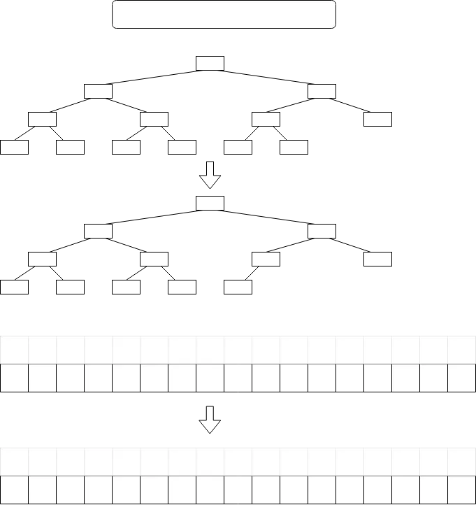
#include <stdio.h>
#include <stdlib.h>
/*** 힙 삭제 연산 ***/
/* 루트 원소를 꺼내고 마지막 원소를 루트에 올린 뒤 down-heap을 통해 힙 속성 유지 */
#define MAX_SIZE 14 // 힙의 최대 크기
typedef struct heap { // 힙 구조체 정의
int heap[MAX_SIZE]; // 힙을 저장할 배열(1번 인덱스 부터 사용)
int size; // 현재 힙에 저장된 원소 개수
} heap;
int main_heap_delete(heap *h) {
int parent, child;
int data, temp;
data = h->heap[1]; // data = 1
temp = h->heap[(h->size)--]; // temp = 23, h->size = 12
parent = 1; // 루트부터 시작
child = 2; // 루트의 왼쪽 자식부터 비교 시작
while(child <= h->size) { // 자식노드가 힙 크기 이내일 때 반복
if ((child < h->size) && (h->heap[child] > h->heap[child+1])) { // 두 자식 중 더 작은 값을 가진 노드 선택
child++;
}
if (temp <= h->heap[child]) { // temp가 자식보다 작거나 같으면 반복 종료
break;
}
h->heap[parent] = h->heap[child]; // 부모 자리에 자식 값을 올림
parent = child; // 한 단계 아래로 이동
child *= 2; // 왼쪽 자식 인덱스로 갱신
}
h->heap[parent] = temp; // temp를 최종 위치에 저장
return data; // 삭제된 루트 원소 반환
}
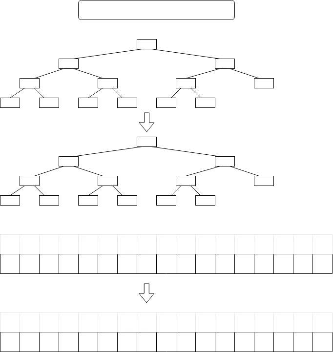
#include <stdio.h>
#include <stdlib.h>
/*** 힙 삽입 연산 ***/
/* 새로운 원소를 힙의 끝에 넣고, 부모와 비교하며 위로 올라가면서 힙 속성 유지 */
#define MAX_SIZE 14 // 힙의 최대 크기
typedef struct heap { // 힙 구조체 정의
int heap[MAX_SIZE]; // 힙을 저장할 배열(1번 인덱스 부터 사용)
int size; // 현재 힙에 저장된 원소 개수
} heap;
void min_heap_insert(heap *h, int data) {
int i;
if (h->size >= MAX_SIZE - 1) { // 힙에 공간이 있는지 확인
printf("Heap is full!\n");
return;
}
i = ++(h->size); // 새로운 원소를 넣을 위치
while((i != 1) && (data < h->heap[i/2])) {
h->heap[i] = h->heap[i/2]; // 부모 값을 아래로 내림
i /= 2; // 부모 위치로 이동
}
h->heap[i] = data; // 위치에 삽입
}
10. 선택 트리, 숲, 이진 트리 개수
- BS트리: 균형이 깨지면 성능의 급격한 하락
- Splay트리: 반복적으로 같은 키를 탐색하는 경우 효율적
- AVL트리: 탐색성능은 안정적이지만, 삽입/삭제시 회전연산이 많아 높은 구현 난이도
- BB트리: 서브트리의 무게를 기준으로 균형
10.1. 이진 선택 트리
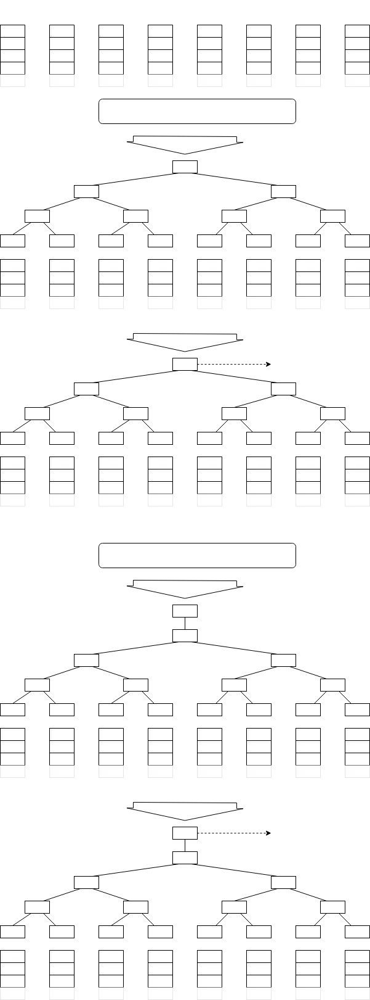
- 합병 정렬: 차례로 정렬한 데이터 리스트 k개를 완전한 순서를 유지하는 하나의 리스트로 만드는 과정
- 선택 트리: 합병 정렬에 사용하는 특수한 트리
- 승자 트리: 각 노드가 두 자식 노드의 작은 값(승자)인 완전 이진 트리
- 패자 트리: 각 노드가 두 자식 노드의 큰 값(패자)이며 최종 승자는 0번 노드에 저장하는 트리
10.2. 숲
- 숲: 분리된 트리 모임이며, n(>=0)개 이상의 분리된 트리 집합
- 노드 n개인 서로 다른 이진 트리의 개수: (2n)!/n!(n+1)!
- 숲을 이진트리로 변환하는 규칙
- 부모의 첫번째 자식은 좌측 자식으로 연결
- 같은 부모를 가진 형제 노드들은 좌측 자식의 우측 자식으로 연결
- 뒤쪽 트리의 루트는 앞쪽 트리의 우측 자식으로 연결
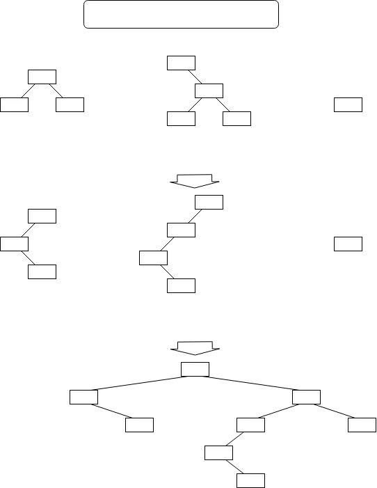
10.3. 이진트리의 개수
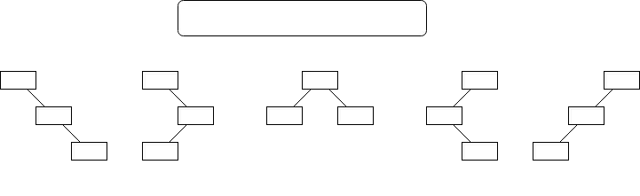
- 어떤 이진 트리에 대한 전・중위 순위 순회 방문 순서가 주어지면 유일한 트리 구조는 한 개
- 1부터 n까지의 수를 스택에 넣었다가 가능한 모든 방법으로 삭제하여 생성할 수 있는 경우의 수와 n개의 노드를 가진 상이한 이진 트리의 수는 동일
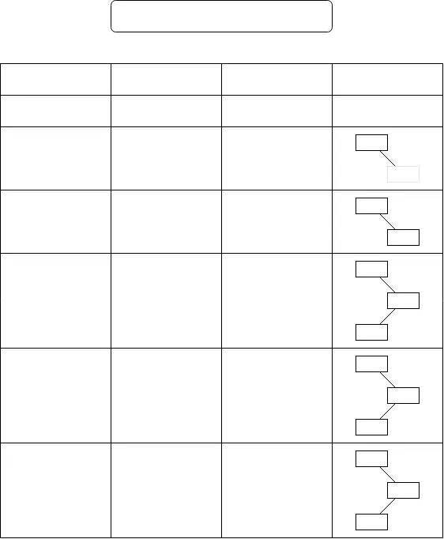
- push()
- 트리 생성 과정으로 껍데기 노드와 좌측 서브 트리를 나타냄.
- 삽입될 노드보다 먼저 pop()할 원소가 존재함.
- 삽입될 노드의 좌측 서브 트리가 될 노드가 존재함.
- 노드 n개인 서로 다른 이진 트리의 개수: ((2n)!)/(n!(n+1)!) <-카탈란수
11. BS, Splay, AVL, BB
11.1. 이진탐색(BS)트리
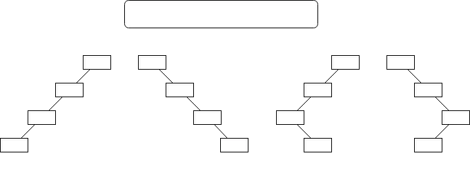
- 이진탐색트리(Binary Search Tree): 노드 vi의 키를 ki라 할때 각 노드 vi가 다음을 만족하는 이진 트리
- 노드 vi의 좌측 서브트리에 있는 모든 노드의 키 값은 vi의 키 값보다 작다.
- 노드 vi의 우측 서브트리에 있는 모든 노드의 키 값은 vi의 키 값보다 작다.
- 장점: 빠르게 탐색할 수 있도록 구성한 이진 트리로, 트리에 특정 데이터가 있는지 검색하고 노드를 자주 삽입・삭제하는 응용 문제에 가장 효과적
- 키(Key): 각 노드를 식별하기 위해 별도의 간단한 이름을 붙인 것
- 트리의 높이: 노드가 가질 수 있는 가장 높은 레벨에 1을 더한 값으로 루트로부터 잎까지 가장 긴 경로 길이
- 트리의 무게: 트리에 속한 잎 노드의 개수
11.1.1. 순회
#include <stdio.h>
#include <stdlib.h>
/*** BS트리에서 중위순회 ***/
typedef struct bst_node { // BS트리를 위한 노드 정의
struct bst_node *left; // 좌측 자식을 위한 포인터
char key; // 키 값을 위한 문자 배열
char content[10]; // 데이터 필드
struct bst_node *right; // 우측 자식을 위한 포인터
} bst_node;
void inorder_bst(bst_node *root) { // BS트리의 중위 순회
if (root != NULL) {
inorder_bst(root->left);
printf("%c", root->key);
inorder_bst(root->right);
}
}
11.1.2. 탐색
#include <stdio.h>
#include <stdlib.h>
/*** BS트리에서 탐색 ***/
typedef struct bst_node { // BS트리를 위한 노드 정의
struct bst_node *left; // 좌측 자식을 위한 포인터
char key; // 키 값을 위한 문자 배열
char content[10]; // 데이터 필드
struct bst_node *right; // 우측 자식을 위한 포인터
} bst_node;
bst_node *search_bst (bst_node *root, char key) { // BS트리의 노드 탐색
if (root == NULL) {
printf("Error: 값을 찾을 수 없습니다.");
return root;
}
if (key == root->key) {
return root;
} else if (key < root->key) {
search_bst(root->left, key);
} else if (key > root->key) {
search_bst(root->right, key);
}
}
11.1.3. 삽입 및 삭제
#include <stdio.h>
#include <stdlib.h>
/*** BS트리의 삽입 ***/
typedef struct bst_node { // BS트리를 위한 노드 정의
struct bst_node *left; // 좌측 자식 포인터
char key; // 키 값을 위한 단일 문자
char content[10]; // 문자열 데이터 필드
struct bst_node *right; // 우측 자식 포인터
} bst_node;
bst_node *insert_bst(bst_node *root, char key) {// BS트리의 노드 삽입 연산
bst_node *ptr; // 탐색용 포인터
bst_node *new_node = (bst_node*)malloc(sizeof(bst_node)); // 새 노드 동적할당
new_node->key = key; // 새 노드의 키값 설정
new_node->left = new_node->right = NULL; // 새 노드의 자식 포인터 초기화
if (root == NULL) { // 만일 루트가 비어있으면,
root = new_node; // 루트에 새 노드를 삽입
return root; // 루트 반환
}
ptr = root; // 루트부터 탐색 시작
while (ptr) { // == while (ptr != NULL)
if (key == ptr->key) { // 새 노드의 키값이 현재 키값과 같으면,
printf("Error, 중복값은 허용되지 않습니다.");
return root; // 루트 반환
} else if (key < ptr->key) { // 새 노드의 키값이 현재 키값보다 작으면,
if (ptr->left == NULL) { // 현재 노드의 좌측 자식 포인터가 비어있을 경우,
ptr->left = new_node; // 현재 노드의 좌측 자식 포인터에 새 노드를 연결하고,
return root;
} else { // 현재 노드의 좌측 자식 포인터가 비어있지 않을 경우,
ptr = ptr->left; // 현재 노드의 좌측 자식 포인터로 이동하여 계속 탐색
}
} else { // 삽입하려는 키값이 현재 키값보다 큰 경우,
if (ptr->right == NULL) { // 현재 노드 우측 포인터가 비어있을 경우,
ptr->right = new_node; // 현재 노드 우측 자식 포인터에 새 노드를 연결하고,
return root;
} else { // 현재 노드의 우측 자식 포인터가 비어있지 않을 경우,
ptr = ptr->right; // 현재 노드의 우측 자식 포인터로 이동하여 계속 탐색
}
}
}
}
#include <stdio.h>
#include <stdlib.h>
/*** BS트리의 삭제 ***/
typedef struct bst_node { // BS트리를 위한 노드 정의
struct bst_node *left; // 좌측 자식 포인터
char key; // 키 값을 위한 단일 문자
char content[10]; // 문자열 데이터 필드
struct bst_node *right; // 우측 자식 포인터
} bst_node;
bst_node *del_bst(bst_node *root, char key) {// BS트리의 노드 삭제 연산
bst_node *del = root; // 삭제대상 노드를 가리키는 포인터
bst_node *parent = NULL; // 삭제대상 노드의 부모를 가리키는 포인터
bst_node *predecessor;
bst_node *successor;
bst_node *child;
if (del->left == NULL && del->right == NULL) { // 삭제대상 노드가 자식이 없는 경우,
if (parent != NULL) { // 부모 노드가 있는 경우,
if (parent->left == del) { // 부모노드의 좌측 자식 노드 포인터가 삭제 대상 노드일 경우,
parent->left = NULL; // 부모노드의 좌측 자식 노드 포인터를 초기화하고,
} else { // 부모노드의 우측 자식 노드 포인터가 삭제 대상 노드일 경우,
parent->right = NULL; // 부모노드의 우측 자식 노드 포인터를 초기화
}
} else { // 부모 노드가 없는 경우(루트가 삭제 대상일 경우)
root = NULL; // 루트를 초기화
}
} else if (del->left != NULL && del->right != NULL) { // 삭제 대상 노드의 자식 노드가 모두 있을 경우,
predecessor = del; // 전임
successor = del->left; // 후임
while (successor->right != NULL) { // 루트 좌측 자식 노드에서 시작하여 우측노드를 따라 내려감
predecessor = successor;
successor = successor->right;
}
if (predecessor->left == successor) { //
predecessor->left = successor->left;
} else {
predecessor->right = successor->left;
}
del->key = successor->key; // 누트 좌측 자식 노드에서 가장 큰 키값을 가진 노드를 루트노드로
del = successor;
} else { // 삭제 대상 노드가 자식노드가 1개일 경우,
if (del->left != NULL) { // 좌측 노드가 있을 경우,
child = del->left; // 좌측노드를 child로 만들고,
} else { // 우측 노드가 있을 경우,
child = del->right; // 우측노드를 child로 만들고,
}
if (parent != NULL) { // 현재노드가 루트노드가 아닌 경우
if (parent->left == del) { // 부모 노드의 좌측 노드가 삭제할 노드일 경우,
parent->left = child; // 부모노드의 좌측 자식 포인터에 child노드를 연결하고,
} else { // 부모 노드의 좌측 노드가 삭제할 노드와 다른 경우,
parent->right = child; // 부모노드의 우측 자식 포인터에 child노드를 연결
}
} else { // 현재노드가 루트노드인 경우
root = child;
}
}
}
11.2. Splay, AVL, BB 트리
- 이진탐색트리의 특징
- 트리의 구조와 특정 노드에 접근할 확률은 BS트리의 성능에 영향을 줌.
- 트리의 성능이 구조에 영향을 받음. 즉 어떤 노드의 탐색삽입삭제를 위한 접근정보를 예측할 수 없는 상황에서는 최적의 BS트리 구조를 결정하기 어려움.
- 최적 성능에 버금가는 BS트리를 위한 휴리스틱 알고리즘
- 자주 탐색하는 키를 가진 노드를 트리의 루트에 가깝게 위치
- 트리가 균형이되도록 유지
11.2.1. Splay 트리
- 개념: 자주 탐색하는 키를 가진 노드를 루트에 가깝게 위치하도록 구성한 이진 탐색 트리
- 구성: 가장 최근에 사용한 노드 x가 트리의 루트에 올 때까지 Splay연산을 반복 적용하여 생성
- 연산: 최근에 접근한 노드 x를 곧 사용할 것으로 예상하여 루트에 위치시켜 트리를 재구성
- 노드x: 최근에 접근한 노드
- 노드p: x의 부모 노드
- 노드g: x의 조부모 노드
- Zig 연산: p가 트리의 루트면, p와 x의 간선 연결을 회전
- Zig-Zig 연산: p가 루트가 아니고 x와 p가 동일하게 좌측 또는 우측 자식들이면, p와 g와의 간선연결을 회전시키고 그 다음에 x와 p의 연결을 회전
- Zig-Zag 연산: 만약 p가 루트가 아니고 x가 왼쪽 p가 오른쪽 자식일 경우(또는 그 반대일 경우), x와 p의 간선연결을 회전하고, x와 g와의 간선 연결을 회전
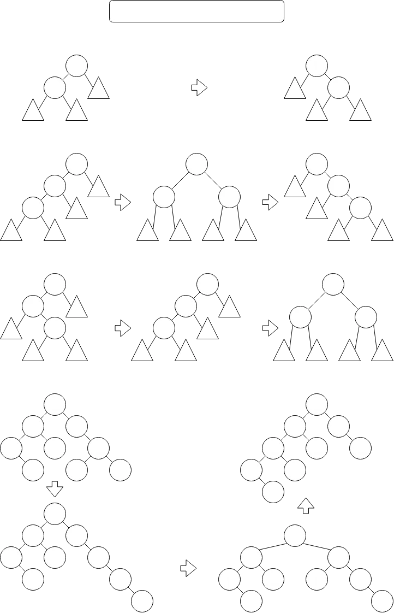
11.2.2. AVL(Adelson-Velsky and Landis)트리
- 정의: 노드 vi의 좌측 서브트리 높이와 우측 서브트리 높이가 최대 1만큼 차이가 난다는 조건을 만족하는 트리
- 개념
- 노드의 삽입과 삭제가 일어날 때 노드의 키값과 서브트리 키값 사이의 관계를 유지하면서 균형을 유지시키는 것이 쉽지 않음.
- 제한 조건을 완화하여 트리가 완전한 균형이 아닌것을 허용
- 무너진 균형의 정도는 작아야하고, 평균 탐색길이도 완전 균형 트리의 탐색 길이와 크게 차이가 나지 않아야 함.
- 거의 완전한 균형 트리의 한 형태로 높이가 균형잡힌 트리(height balanced tree)
- 직접 탐색 성능이 매우 좋음.
11.2.3. BB(Bound-Balanced)트리
- 개념: 각 노드의 양쪽 서브트리 무게가 균형을 유지하는 트리
- 연산
- β 는 균형을 유지하기 위한 인수
- 균형 β(0 < β <= 1/2)라는 것은, 임의의 노드 x에 대해 x의 한쪽 (보통 좌측) 서브트리에 x의 자식노드 수의 비율이 β와 β-1 사이에 있도록 제한하는 경우
- 만일 β=1/2 이면, 좌측 서브트리와 우측 서브트리는 같은 수의 노드로, 극단적으로 무게가 완전히 균형 잡힌 상태
- 만일 β=1/4 이면, 한쪽 서브트리가 다른쪽 서브트리에 비해 3배 정도 노드를 많이 갖는 것이 허용
- $$\sqrt{2}-1 < (좌측서브트리의 무게 / 우측서브트리의 무게) < \sqrt{2}+1$$
** <학습보충> Copilot이 정리해 준 트리 비교 **
| 구분 | 장점 | 단점 |
|---|---|---|
| BS | 구현 간단, 기본적인 탐색/삽입/삭제 가능 | 균형이 깨지면 성능 저하(편향트리 발생) |
| Splay | 자주 사용하는 노드 접근이 빠름. 캐시 친화적 | 균형이 항상 보장되지 않음. 특정 경우 성능저하 |
| AVL | 항상 높이 균형 유지. 탐색 성능 안정적 | 삽입/삭제시 회전연산이 많아 구현 복잡 |
| BB | 균형 유지가 단순. 특정 응용에 적합 | 상대적으로 덜 알려져 있고 구현 자료가 적음. |
12. 멀티웨이 탐색트리1
12.1. m원 탐색트리
- 정의: 트리의 노드가 m개 이하의 가지를 가질 수 있는 탐색 트리
- 같은 수의 노드를 갖는 이진트리보다 낮은 높이의 m원 트리
- 이진 탐색 트리의 확장된 형태
- 탐색 트리의 제한을 따르면서, 2개 이상 ~ m개 이하의 자식 노드를 가질 수 있음.
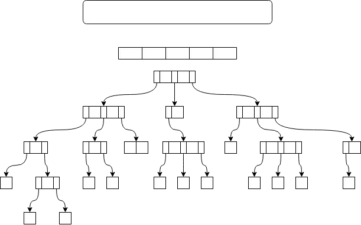
#include <stdio.h>
#include <stdlib.h>
/*** m원 탐색 트리의 노드 구조 ***/
struct m_node {
int n; // 현재 노드에 저장된 키 개수
struct rectype { // 각 키와 그에 연결된 포인터를 묶어 관리하기 위한 구조체
struct m_node *ptr; // 해당 키보다 작은 서브트리를 가리키는 포인터
int key; // 실제 키값
struct rectype *addr; // 키에 연결된 데이터(레코드)의 주소
} keyptrs[n-1]; // 노드 내 키와 포인터 배열(최대 n-1개 저장)
struct m_node *keyptrn; // 마지막 키보다 큰 서브트리를 가리키는 포인터
}
/*** m원 탐색에서 키값을 찾는 연산 ***/
struct m_node *nodeptr; // 탐색 과정에서 노드를 가리키는 포인터
struct rectype *recptr; // 탐색 결과로 반환할 포인터
struct rectype *search(int skey, struct m_node *r) {
int i; // 현재 노드 내 키 배열을 순회하기 위한 인덱스
extern struct m_node node; // 외부에서 정의된 m_node
if (r == NULL) { // 현재 노드가 null(탐색실패)이면,
return NULL;
} else {
i = 0; // 인덱스 초기화
while (i < r->n && skey > r->keyptrn[i].key) { // 현재 노드의 키들을 순차적으로 비교하면서, 찾고자 하는 키가 더 클결우 인덱스를 증가
i++;
}
if (i < r->n && skey == r->keyptrn[i].key) { // 현재 노드에서 키를 찾은 경우,
return(r->keyptrn[i].key); // 해당 키에 연결된 레코드 주소 반환
} else if (i < r->n) { // 아직 키 배열 범위 내에 있고 찾는 키가 더 작을 경우, 해당 키보다 작은 서브트리로 내려가서 재귀 탐색
return(search(skey, r->keyptrn[i].ptr));
} else { // 모든 키보다 큰 경우, 마지막 포인터를 따라 우측 서브트리로 내려가서 재귀 탐색
return(search(skey, r->keyptrn));
}
}
}
12.2. B트리
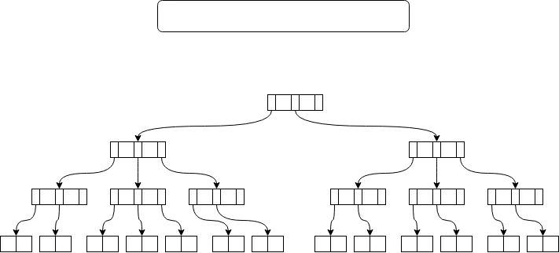
-
정의: m원 탐색트리를 개선한 트리로, 인덱스 구조를 구현하는데 가장 일반적으로 사용하는 방법으로 차수가 m인 트리
-
특징
- m원 탐색트리는 서브 트리의 균형에 대해서는 특별한 제한 없음.
- 각 노드가 자식을 많이 갖게 하여 트리의 높이를 줄이고, 전체적으로 균형을 유지한다면 탐색 성능은 계속 유지할 수 있음.
- 차수 m인 B트리의 탐색 경로 길이는 같은 개수의 키를 가지는 이상적인 m원 탐색 트리보다 길 수 있지만, 이상적인 m원 탐색트리의 유지 비용에 비해 키 값을 삽입하거나 삭제할 때 B트리를 유지하는 것이 더 효율적
-
조건
- 투르와 잎 노드를 제외한 각 노드는 최소 [m/2]개의 서브트리를 가짐.
- 트리의 루트는 최소한 2개의 서브트리를 가짐.
- 트리의 모든 잎 노드는 같은 레벨에 위치
12.2.1. B트리 노드 삽입 알고리즘
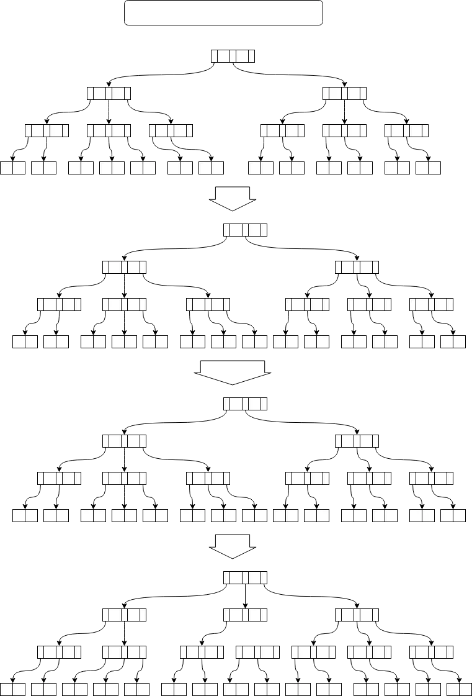
- 삽입활 위치를 찾기 위해 노드의 키값을 좌측에서 우측으로 탐색
- B트리에서 모드 노드는 잎노드에서 삽입 시작
- 노드에 빈자리가 있으면 삽입 후 종료
- 노드가 꽉 차있으면 노드를 2개로 분리하고 키와 포인터를 새 노드에 반씩 할당
- 잎노드의 키값들과 삽입노드의 키값 중에서 중간값 선택
- 선택된 중간값보다 작은 키값을 갖는 것은 좌측노드에, 큰것은 우측 노드에 위치
- 중간값을 가지는 노드의 키값과 포인터를 부모노드에 삽입하되, 부모노드가 루트이면 두 노드를 가리키도록(자식노드가 되도록) 수정
12.2.2. B트리 노드 삭제 알고리즘
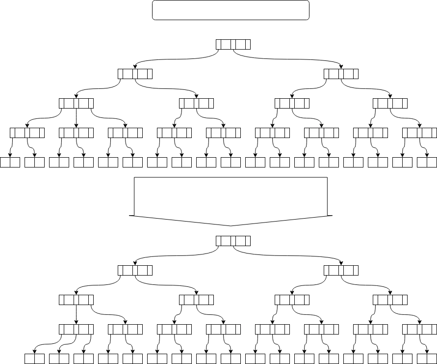
- B트리의 잎노드에서 키를 삭제하는 알고리즘
- 삭제할 키 값을 포함안 노드를 찾는다.
- 노드에서 키값을 삭제하고, 필요한 경우 재배열
- B트리의 내부에서 키를 삭제하는 알고리즘
- 삭제할 키 값을 포함안 노드를 찾는다.
- 새로운 기준값(삭제된 자리에 올 키값)을 선택하여 해당 (잎)노드에서 삭제하고, 그 값을 삭제된 키값 자리로 이동
- 보통 좌측 서브트리의 가장 큰 키값 또는 우측 서브트리의 가장 작은 키값으로 대체
- 기준값으로 대체하기 위해 삭제된 (잎)노드가 정해진 개수의 키값을 갖지 않으면 트리를 재배열
- B트리의 재배열의 경우 키를 삭제하는 알고리즘
- 키값이 부족한 노드의 우측 형제가 존재하고 키가 정해진 최소 개수보다 많다면, 왼쪽으로 회전
- 부모노드의 기준(키)값을 개수가 부족한 노드의 끝으로 이동. 즉, 기준값을 한 단계 아래로 내려 개수 충당
- 부모노드의 기준값을 우측 형제의 첫번째 키로 수정하여 균형 조정
- 키값이 부족한 노드의 좌측 형제가 존재하고 키가 정해진 최소 개수보다 많다면, 오른쪽으로 회전
- 부모노드의 기준(키)값을 개수가 부족한 노드의 끝으로 이동. 즉, 기준값을 한 단계 아래로 내려 개수 충당
- 부모노드의 기준값을 좌측 형제의 마지막 키로 수정하여 균형 조정
- 좌우 형제가 최소개수의 키를 가지고 있다면 좌우 형제 병합
- 부모 노드의 기준(키)값을 좌측 노드의 마지막에 복사
- 우측 노드의 모든 키값을 좌측 노드로 이동
- 키를 갖지 않는 우측 노드 삭제
- 부모 노드가 루트면서 키를 더이상 갖지 않으면 합쳐진 노드가 새로운 루트가 되고, 부모 노드의 키 개수가 정해진 최소 개수보다 작으면 부모 노드를 재배열
- 키값이 부족한 노드의 우측 형제가 존재하고 키가 정해진 최소 개수보다 많다면, 왼쪽으로 회전
12.3. B* & B+ 트리
12.3.1. B* 트리
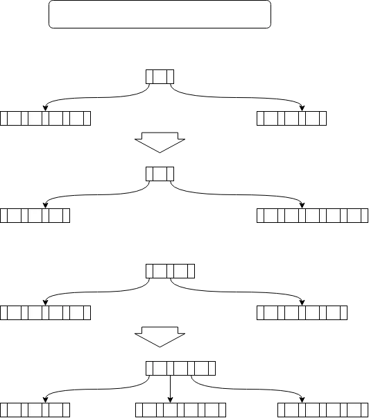
- 정의: 노드의 2/3이상이 채워지는 B트리로, 노드가 꽉차면 분리하지 않고 키와 노드를 재배치하여 다른 형제 노드로 이동
- B트리와 동일한 수의 노드를 갖는다면 높이가 낮음.
- 삽입・삭제시 발생하는 노드 분리를 줄이려고 고안
- 조건
- 공집합이거나 높이가 1이상인 m원 탐색 트리
- 루트노드는 2개 이상 2[(2m-2)/3] + 1개 이하의 자식노드를 가짐.
- 내부노드는 최소한 [(2m-2)/3] 개의 자식노드를 가짐.
- 모든 잎노드는 동일한 레벨
- 포인터가 k개이면서 잎노드가 아닌 노드는 k-1개의 키를 가짐.
12.3.2. B+ 트리
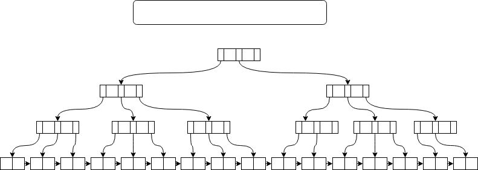
- 정의: 모든 키값이 잎에 있고 그 키값에 대응하는 실제 데이터에 대한 주소를 앞 노드만이 가지고 있어 인덱스 된 순차 파일을 구성하는데 사용하는 트리
- 특징
- 탐색트리로 구성하면 매우 빠르게 접근할 수 있지만, 전체 데이터를 차례로 처리하기에는 불편
- 매번 좌측인지 우측인지 비교해가며 다음 노드를 처리해야 함.
- B트리와 같이 각 노드의 키가 적어도 1/2이 채워져야 하는 점은 같음.
- 잎노드를 순차적으로 연결하는 포인터집합이 존재한다는 점에서 B트라와 차이
- 구조
- 잎노드의 마지막 포인터는 다음 키값을 가지는 노드를 가리킴.
- 순차처리를 할 때는, 키 값을 비교하지 않고, 이 포인터를 이용해서 차례로 다음 데이터에 접근해서 처리
- 모든 키값이 잎노드에 있고 그 키값에 대응하는 실제 데이터에 대한 주소를 잎 노드만이 가짐.
- 직접탐색은 잎노드에 도달해야 종료
- 같은 노드의 B트리보다 레벨이 작아서 같은 차수의 B트리와 탐색 성능이 거의 같음.
- 삽입
- 잎 노드가 2개의 노드로 분리 될 때에는 키 값 순서에 따라 배치하고, 중간 키 값은 중간 노드에 올려 놓음.
- 새 노드는 순서에 맞게 임 노드에 삽입
- 삭제
- 키 값을 잎노드에서 삭제할 때 트리의 내부노드에서도 삭제할 필요는 없는데, 그 키값이 직접 탐색을 위해 쓰이기 때문
13. 멀티웨이 탐색트리2
13.1. 2-3 트리
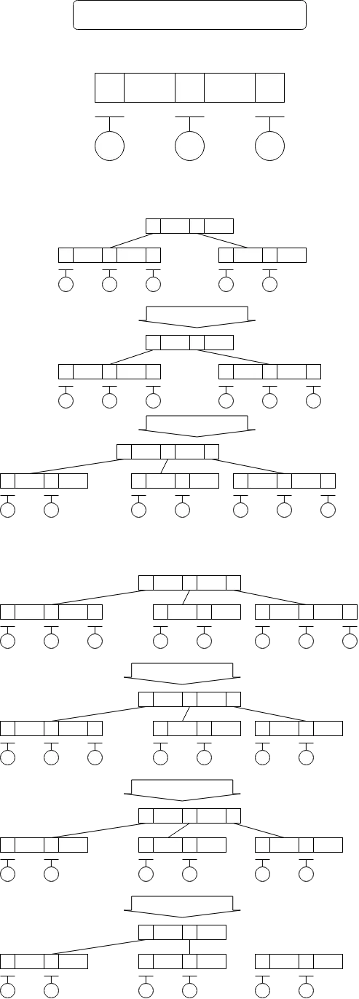
- 정의: 차수가 2 또는 3인 내부 노드를 갖는 탐색 트리
- 특징
- 내부노드에만 2-노드 또는 3-노드의 제약이 있고, 잎노드는 같은 레벨에 있으면 됨.
- 조건
- 각각의 내부노드는 한 개의 키값을 갖는 2-노드이거나 두 개의 키값을 갖는 3-노드
- lchild, mchild를 각각 2-노드의 좌측 및 중간 자식이라 하고, lkey가 이 노드의 키값일 때,
- 루트 아래 lchild의 모든 2-3 서브트리 키값은 lkey보다 작음.
- 루트 아래 mchild의 모든 2-3 서브트리 키값은 lkey보다 큼.
- lchild, mchild 및 rchild를 각각 3-노드의 좌,중,우측 자식이라 하고, lkey 및 rkey를 이 노드의 두 키값이라 할 때,
- lkey < rkey
- 루트 아래 lchild의 모든 2-3 서브트리의 키값은 lkey보다 작음.
- 루트 아래 mchild의 모든 2-3 서브트리의 키값은 rkey보다 작고, lkey보다 큼.
- 루트 아래 rchild의 모든 2-3 서브트리의 데이터는 rkey보다 큼.
- 모든 잎 노드는 같은 레벨에 위치
13.2. 2-3-4 트리
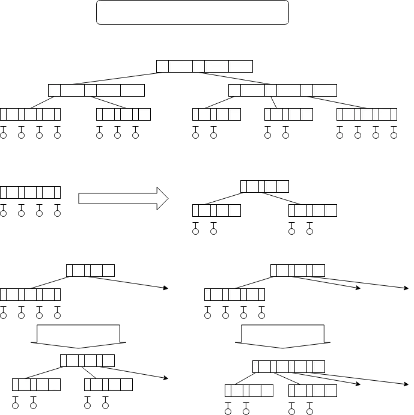
- 정의: 2-3 트리에 4-노드를 허용
- 특징
- 2-3-4 트리는 2-3 트리보다 삽입과 삭제가 용이
- 2-3-4 트리에서는 2-노드와 3-노드에 대한 트리 재구성 확률이 2-3 트리에서 보다 작기 때문에 삽입 및 삭제 연산에 더 효율적
- 조건
- 각각의 내부 노드는 2-노드, 3-노드, 4-노드로 각각 1개, 2개, 3개의 키값을 가짐.
- lchild, mchild를 각각 2-노드의 좌측 맨 끝과 좌중간 자식 노드라고 하고, lkey가 키값일 경우
- 루트아래 lchild의 모든 2-3-4 서브트리의 키 값은 lkey보다 작음.
- 루트아래 mchild의 모든 2-3-4 서브트리의 키 값은 lkey보다 큼.
- lchild, lmchild 및 rmchild를 각각 3-노드의 좌측, 좌중간, 우중간 자식 노드라 하고, lkey, mkey가 이 노드의 키값일 경우,
- lkey < mkey
- 루트아래 lchild의 모든 2-3-4 서브트리의 키 값은 lkey보다 작음.
- 루트아래 lmchild의 모든 2-3-4 서브트리의 키 값은 lkey보다 크고 mkey보다 작음.
- 루트아래 rmchild의 모든 2-3-4 서브트리의 키 값은 mkey보다 큼.
- lchild, lmchild, rmchild 및 rchild를 각각 4-노드의 좌측, 좌중간, 우중간 자식 노드라 하고, lkey, mkey 및 rkey가 이 노드의 키값일 경우,
- lkey < mkey < rkey >
- 루트아래 lchild의 모든 2-3-4 서브트리의 키 값은 lkey보다 작음.
- 루트아래 lmchild의 모든 2-3-4 서브트리의 키 값은 lkey보다 크고 mkey보다 작음.
- 루트아래 rmchild의 모든 2-3-4 서브트리의 키 값은 mkey보다 크고 mkey보다 작음.
- 루트아래 rchild의 모든 2-3-4 서브트리의 키 값은 rkey보다 큼.
13.3. 레드 블랙 트리
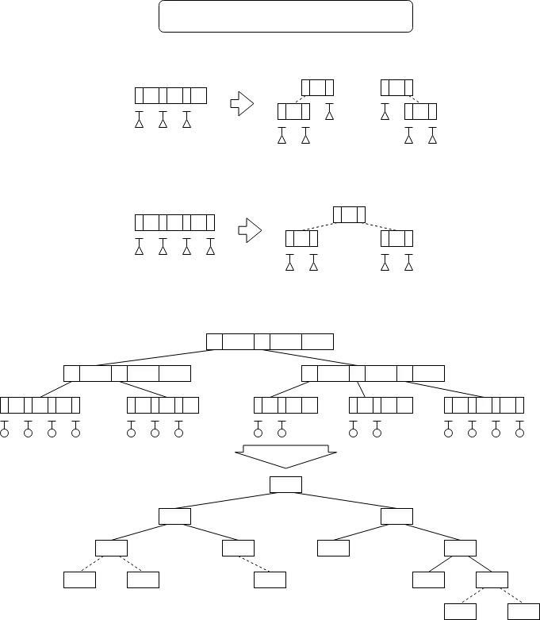
- 정의: 2-3-4 트리를 이진트리로 나타낸 것으로 기억장소를 효율적으로 사용할 수 있음.
- 특징
- 효율적인 기억장소 사용을 위해 2-3-4 트리를 이진트리로 나타낸 탐색 트리
- 레드 간선과 블랙간선의 서브트리 포인터를 가짐.
- 레드 간선은 2-3-4 트리의 한 노드 내에 있는 노드의 관계
- 블랙 간선은 2-3-4 트리의 부모자식 관계
- 레드 블랙 트리의 탐색 방법은 보통의 이진 탐색 트리의 탐색 알고리즘과 동일
14. 그래프1
14.1. 개념 및 용어
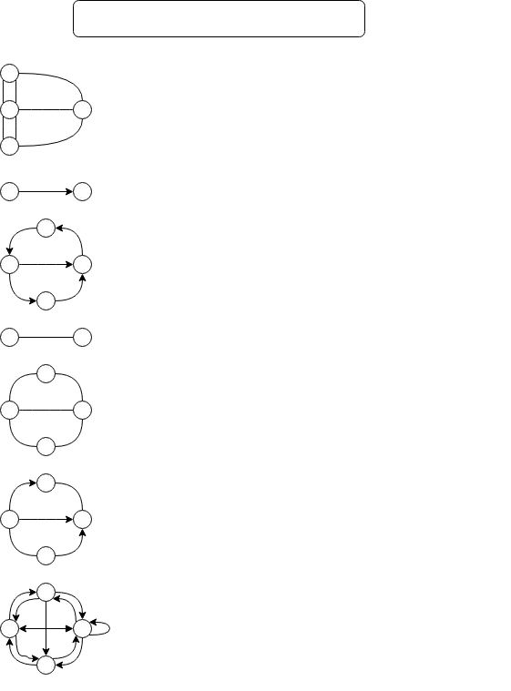
- 그래프(G) = (V, E): 하나이상의 정점(혹은 노드)을 포함하는 집합 V와 두 정점의 쌍으로 구성되는 간선을 포함하는 집합 E의 순서쌍으로, 관계를 추상화하여 전기회로의 분석, 최단거리 탐색, 프로젝트 계획, 스케줄링, 운송, 컴퓨터네트워크 시뮬레이션이 가능
- 간선: 두 정점을 연결하는 선으로, 두 정점의 쌍으로 나타냄.
- 무방향 그래프: 간선의 방향성이 없는 그래프로, 간선은 실선으로 표현되며, 기호로는 {V1, V2}
- 방향 그래프: 간선의 방향성이 있는 그래프로, 간선은 화살표로 표현되며, 기호로는 (V1, V2)
- 다중그래프: 두 정점을 잇는 간선이 여러개인 그래프
- 방행다중그래프: 방향성을 갖는 간선으로 이루어진 그래프
- 무방향다중그래프: 방향성이 없는 간선으로 이루어진 다중 그래프
- 정점에 연결된 간선들의 개수
- 가중그래프: 간선이 가중치를 갖는 그래프
- 그래프의 성질
- n개의 정점을 갖는 무방향 그래프에서 Vi != Vj 인 서로 다른 무순서쌍{Vi, Vj}의 최대개수
무방향그래프: nC2 = (n(n-1)/2) 방향그래프: nP2 = n(n-1)
- 완전그래프: 모든 정점들이 간선으로 서로 연결된 그래프
- 두 정점 Vi와 Vj가 서로 인접: 무방향 그래프 간선 e ∈ E 가 {Vi, Vj}으로 표현될 때, 즉 두 정점 Vi과 Vj를 연결하는 간선이 존재하는 경우를 말함.
- 독립 정점: 다른 어떤 정점과도 인접하지 않은 정점
- 널(null) 그래프: 독립 정점만으로 구성한 그래프이며, 간선의 집합 E는 공집함
- 경로: 임의의 두 정점을 연결하는 어떤 간선의 끝정점(머리)에서 그 간선의 시작정점(꼬리)으로 이어지는 간선의 연속(열)
- 무방향 그래프 G에 대해 E(G)에 속하는 순서없는 간선 {Vp, V1}, {V1, V2}, …, {Vn-1, Vn}, {Vn, Vq}가 있을 때, 그래프 정점 Vp에서 Vq까지 경로는 정점 Vp, V1, V2, …, Vn, Vq 들의 연속을 말함.
- 만일 G1가 방향 그래프인 경우에 정점 Vp에서 Vq까지 경로는 E(G1)에 속하는 손서있는 간선들 Vp, V1, V2, …, Vn, Vq 로 구성
- 특별히 언급이 없는 경우 정점 Vp에서 Vq까지 경로는 Vp, V1, V2, …, Vn, Vq와 같은 경로상의 간선을 구성하는 정점 순서열로 표시
- 결론적으로 경로 길이는 경로에 있는 간선의 수, 단순 경로는 경로상에 있는 모든 정점이 서로 다른 경로, 기본 경로는 경로상에 있는 모든 간선이 서로다른 경로를 말함.
- n개의 정점을 갖는 무방향 그래프에서 Vi != Vj 인 서로 다른 무순서쌍{Vi, Vj}의 최대개수
- 방향그래프
- 사이클: 출발점과 도착점이 동일한 단순 경로
- 사이클그래프: 사이클이 있는 그래프
- 진입차수: 주어진 정점으로 향한 간선의 수
- 진출차수: 주어진 정점에서 시작하는 간선의 수
- 정점의 차수: 진출 + 진입차수
- 루프: 간선의 시작점과 끝점이 같은 정점의 길이가 1인 경로
- 무사이클 그래프: 사이클이 없는 그래프. 트리라고도 함.
- DAG(Directed Acyclic Graph): 방향이 있는 무사이클 그래프
14.2. 추상 자료형
| 연산 | 내용 |
|---|---|
| Graph() | 생성 |
| addVertex(v) | 정점 v 추가 |
| addEdge(u, v) | 장잠 u, v를 연결하는 간선 추가 |
| addEdge(u, v, w) | 가중치 w를 가진 간선 추가 |
| getVertex(v) | 특정 정점 검색 |
| getVertices() | 그래프의 모든 정점 변환 |
| getEdges() | 그래프으 ㅣ모든 간선 변환 |
| adjacent(u, v) | 두 정점이 연결되어 있는지 확인 |
| neighbors(v) | 정점 v와 인접한 정점 집합 변환 |
14.3. 그래프 표현법
14.3.1. 인접 행렬에 의한 그래프 표현
- G = (V, E)가 n개의 정점을 가진 그래프라고 가정
- 그래프 G는 n*n 행렬로 표현되고 다음과 같은 행렬값을 가짐.
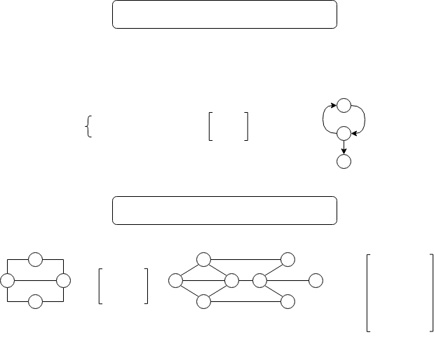
14.3.2. 인접 리스트에 의한 그래프 표현
- 정점의 개수가 n인 그래프에 대하여 인접행렬의 n행을 n개의 연결리스트로 나타내는 방법
- 리스트 i의 각 노드들은 정점 i에 인접되어 있는 정점들을 나타냄.
- 각 리스트들은 헤드노드들을 가지며, 헤드노드들은 자신의 인접 정점을 순차적으로 가리킴.
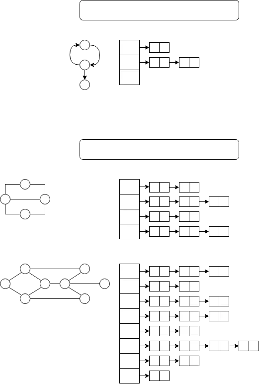
15. 그래프2
15.1. 그래프 탐색
- 정의: 그래프에서 특정 정점을 찾는 연산.
- 그래프 G=(V, E)와 V(G)에 있는 정점 v가 주어졌을 때, 정점 v에 도달할 때까지 G의 정점을 방문하는 연산
- 만일 v가 없을 경우, 그래프의 모든 정점 방문 후 종료
15.1.1. 깊이 우선 탐색
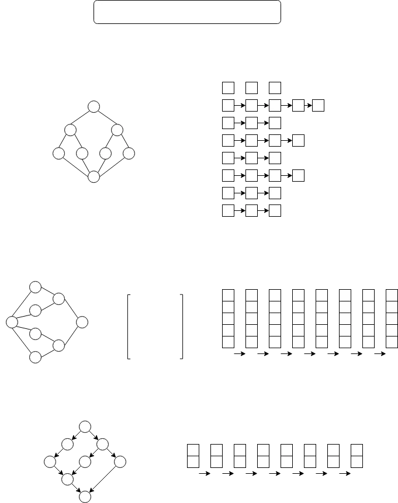
- 시작: 출발점 v를 방문
- 다음으로 v에 인접하고 아직 방문하지 않은 정점 v를 선택하여 w를 출발점으로 다시 깊이 우선 탐색(인접하고 아직 방문하지 않은 정점을 선택)
- 위의 두 과정을 모든 정점을 한 번씩 방문할 때까지 방문함.
- 만일 인접한 모든 정점들이 이미 방문한 정점인 경우에는, 가장 최근에 방문했던 정점 중에서 방문하지 않은 정점 w를 가진 정점을 선택하여 정점 w로부터 다시 깊이 우선 탐색 시작
- 방문하지 않은 정점이 없으면 탐색 종료
15.1.2. 너비 우선 탐색
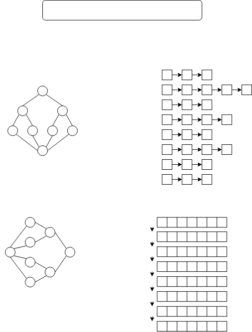
- 시작: 출발점 v를 방문
- 다음으로 v에 인접한 정점 w를 모두 방문한 후, 다시 w에 인접한 방문하지 않은 정점들을 차례로 방문
- 위의 두 과정을 모든 정점을 한 번씩 방문할 때까지 방문함.
- 만일 인접한 모든 정점들이 이미 방문한 정점인 경우에는, 가장 최근에 방문했던 정점 중에서 방문하지 않은 정점 w를 가진 정점을 선택하여 정점 w로부터 다시 깊이 우선 탐색 시작
- 방문하지 않은 정점이 없으면 탐색 종료
15.2. 최소 신장 트리
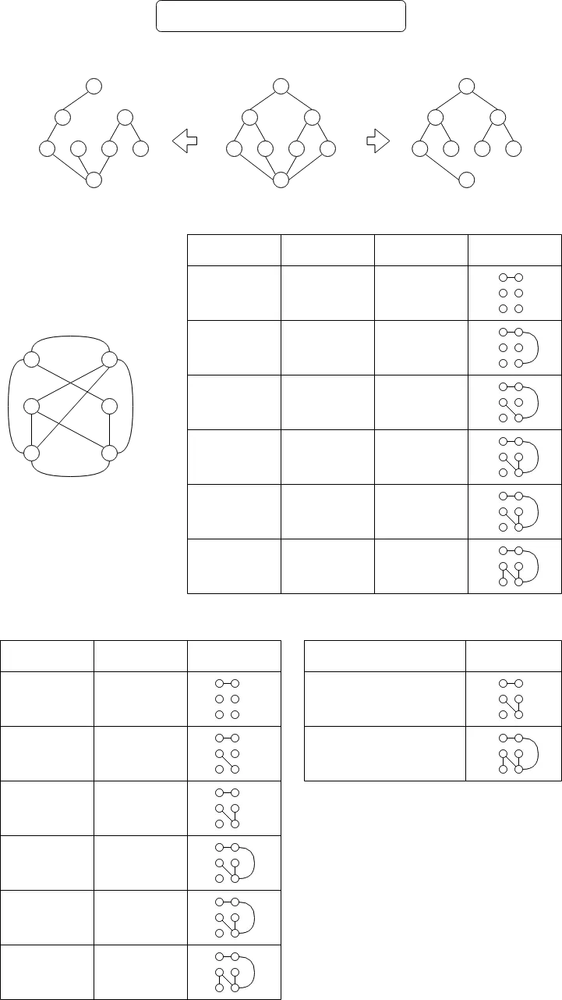
- 신장트리: 그래프 G의 모든 정점과 간선의 일부(또는 전부)를 포함하는 트리로 사이클이 존재하지 않음.
- G의 최소부분 그래프: 그래프 G의 부분 그래프 중에서 간선의 수가 가장 작은 것
- 최소비용신장트리: 가중치 그래프 G의 가중치가 작은 간선을 선택하여 구성된 신장 트리
15.2.1. 프림 알고리즘
- n개의 정점을 갖는 연결 그래프 G에 대한 최소 비용 신장 트리 T를 구하는 알고리즘
- 그래프 전체에서 최소 비용을 갖는 간선{u, v}을 선택하여 이 간선을 최소비용 신장 트리 T에 추가
- 이 간선을 최소 비용 신장 트리 T에 추가하였을 땨, 사이클을 형성하지 않으면 T에 추가하고 아니면 무시
15.2.2. 쿠르스컬 알고리즘
- 남은 간선 중에서 무조건 최소비용인 간선을 선택한 후, 사이클을 형성하지 않으면 그 간선을 선택
- 중간과정에 있는 T는 하나인 트리가 아니고 여러 개의 분리된 트리, 즉 숲일 수 있음.
15.2.3. 솔린 알고리즘
- 간선이 하나도 없는 그래프의 모든 정점들로 구성된 숲에서 시작
- 단계가 거듭되면서 트리들이 최소 비용을 갖는 간선으로 연결
【참고자료】
- 강태원・정광식, 자료구조, KNOU Press (2023.07.25)